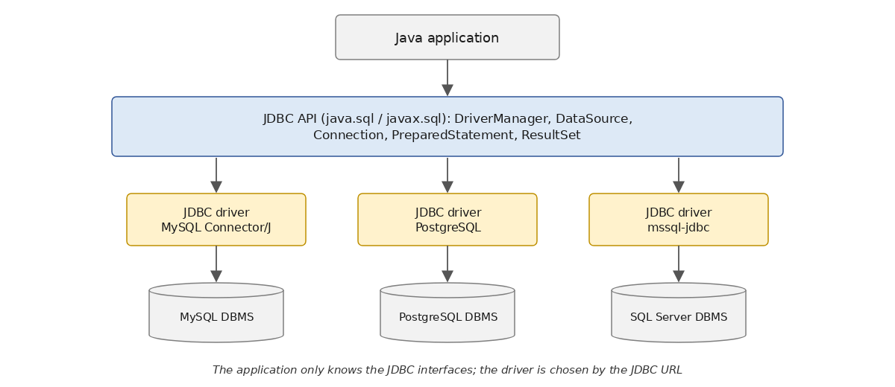

10. Datenbankzugriff mit JDBC
Voraussetzungen: Version 6 der Anwendung [Tax], die am Ende dieses Kapitels beschrieben wird, verwendet die Module [tax-dao], [tax-business] und [tax-ui] aus Version 5 (Kapitel 6) wieder. Bevor Sie Ihre Projekte erstellen oder öffnen, müssen Sie Version 5 mit dem Befehl [mvn install] im lokalen Maven-Repository installiert haben, eingegeben im Ordner [06-architectures/TaxV5] (siehe Kapitel 6, Abschnitt zu [mvn install]).
10.1. Der JDBC-Treiber
Greifen wir die Schichtenarchitektur wieder auf, die seit Kapitel 6 mehrfach verwendet wurde. Bisher hat die [dao]-Schicht der Anwendung [Tax] drei Arten von Datenquellen genutzt:
- im Code fest eingetragene Daten ([HardwiredTax]);
- Daten aus einer Textdatei ([FileTax]);
- Daten aus einer JSON-Datei ([JsonTax]).
In diesem Kapitel untersuchen wir den Fall, dass die Daten aus einer Datenbank stammen. Die Architektur sieht dann wie folgt aus:

Im obigen Schema kommuniziert die [dao]-Schicht [1] über eine für das verwendete DBMS spezifische Klassenbibliothek [2] mit dem DBMS (Datenbankmanagementsystem) [3], das die Datenbank [4] verwaltet. Diese Bibliothek implementiert eine standardisierte API der Java-Plattform, JDBC („Java DataBase Connectivity“), die seit Version 1.1 im Jahr 1997 Bestandteil des JDK ist. Man spricht von einem JDBC-Treiber („JDBC driver“). Alle gängigen DBMS besitzen einen JDBC-Treiber, der als [.jar]-Archiv ausgeliefert wird.
JDBC ist in erster Linie eine Menge von Schnittstellen, die in den Paketen [java.sql] und [javax.sql] des Moduls [java.sql] des JDK definiert sind: [Connection], [Statement], [PreparedStatement], [ResultSet], [DataSource] … Ein JDBC-Treiber stellt Klassen bereit, die diese Schnittstellen implementieren. Der Anwendungscode hingegen interagiert nur mit den Schnittstellen: Er enthält in der Regel nicht die Namen der Klassen des Treibers. Das unterscheidet sich von anderen Plattformen, auf denen der Code oft direkt die für jedes DBMS spezifischen Klassen verwendet ([MySqlConnection], [SqlConnection] …): In Java ist die Abstraktion von Anfang an die Regel, und der Wechsel zu einem anderen DBMS bedeutet im Wesentlichen, den Treiber und die Adresse der Datenbank zu ändern, wie wir sehen werden. Allerdings hat jedes DBMS seinen eigenen SQL-Dialekt: Diese Unabhängigkeit hat ihre Grenzen, die wir ebenfalls untersuchen werden.
Wir verwenden ein einziges DBMS, MySQL 8, das der Anhang „Das DBMS MySQL mit Laragon“ unter Windows installiert, zusammen mit seinem offiziellen JDBC-Treiber MySQL Connector/J, Version 9.7.0. Die Datenbanken werden durch SQL-Skripte erstellt, die mit dem Kommandozeilenclient [mysql] ausgeführt werden; der Anhang zeigt auch, wie man sie mit dem in Laragon enthaltenen grafischen Client HeidiSQL erstellt.
10.2. Die zwei Arten, eine Datenquelle zu nutzen
Auf eine Datenbank kann auf zwei verschiedene Arten zugegriffen werden:
- verbundener Modus;
- getrennter Modus.
Im verbundenen Modus
- öffnet die Anwendung eine Verbindung zur Datenquelle;
- arbeitet sie im Lese-/Schreibmodus mit der Datenquelle;
- schließt sie die Verbindung.
Im getrennten Modus
- öffnet die Anwendung eine Verbindung zur Datenquelle;
- holt sie eine Kopie aller oder eines Teils der Daten der Quelle in den Speicher;
- schließt sie die Verbindung;
- arbeitet sie mit der Kopie der Daten im Speicher und liest und schreibt darin;
- öffnet sie nach Abschluss der Arbeit eine Verbindung, sendet die geänderten Daten an die Datenquelle, damit diese aktualisiert wird, und schließt die Verbindung.
Der verbundene Modus ist der Modus der Schnittstelle [ResultSet] von JDBC: Die Zeilen des Ergebnisses einer Abfrage werden gelesen, während die Verbindung geöffnet ist. Der getrennte Modus ist der der Schnittstelle [CachedRowSet] im Paket [javax.sql.rowset] (Java 5): eine Tabelle im Speicher, die aus einer Abfrage befüllt, offline geändert und anschließend mit ihren Änderungen an die Datenbank zurückgeschickt wird. Diese „RowSet“-Komponenten sind in JDK 25 noch vorhanden, werden in neuen Anwendungen aber kaum verwendet: Die Arbeit mit einer Kopie der Daten im Speicher mit anschließender Speicherung der Änderungen übernimmt heute ein ORM („Object-Relational Mapper“), der gewöhnliche Java-Objekte statt Tabellenzeilen verwaltet. Der in Java am weitesten verbreitete ORM, Hibernate, ist Gegenstand von Kapitel 11. Wir konzentrieren uns daher hauptsächlich auf den verbundenen Modus – auf dem Hibernate aufbaut – und zeigen den getrennten Modus nur an einem einzigen Beispiel am Ende des Kapitels.
10.3. Die grundlegenden Konzepte des Datenbankbetriebs
10.3.1. Die Beispieldatenbank
Wir erläutern die wichtigsten Konzepte der Nutzung einer Datenbank anhand einer MySQL-Datenbank. Sie enthält eine einzige Tabelle, [articles], in der jede Zeile einen Artikel eines Geschäfts beschreibt:
- [ID]: eine eindeutige Kennung des Artikels, die der Primärschlüssel der Tabelle ist;
- [NAME]: der Name des Artikels, der ebenfalls eindeutig ist;
- [PRICE]: sein Preis;
- [CURRENTSTOCK]: sein aktueller Bestand;
- [MINIMUMSTOCK]: der Mindestbestand, unterhalb dessen der Artikel nachbestellt werden muss.
Die Datenbank wird durch das folgende SQL-Skript erstellt: [sql/dbarticles.sql]:
- Zeile 5: Das Skript ist eine in UTF-8 kodierte Textdatei. [SET NAMES utf8mb4] teilt dies dem Server mit; andernfalls könnten Zeichen mit Akzenten in den Zeilen 31–36 vom Client [mysql] falsch interpretiert werden;
- Zeilen 8–9: Die Datenbank wird gelöscht, falls sie existiert, und dann neu erstellt. Das Skript kann somit mehrfach ausgeführt werden, um die Datenbank in ihren Ausgangszustand zurückzuversetzen. [utf8mb4] ist die vollständige Unicode-Kodierung von MySQL (die ältere Kodierung [utf8] von MySQL kodiert nur Zeichen mit bis zu drei Bytes);
- Zeile 12: [dbarticles] wird zur aktuellen Datenbank: Die folgenden SQL-Befehle werden darauf ausgeführt;
- Zeilen 15–27: die Definition der Tabelle [articles]:
- Zeile 16: Die Spalte [ID] ist der Primärschlüssel der Tabelle ([PRIMARY KEY]). Das MySQL-spezifische Attribut [AUTO_INCREMENT] gibt an, dass ihr Wert beim Einfügen einer Zeile vom DBMS selbst erzeugt wird: 1, 2, 3 … Die anderen DBMS kennen gleichwertige Konzepte, jedoch mit anderer Syntax ([IDENTITY] bei SQL Server, [GENERATED … AS IDENTITY] bei PostgreSQL und Oracle);
- Zeile 18: Der Preis ist eine exakte Dezimalzahl mit 10 Stellen und 2 Nachkommastellen. Vermeiden Sie für Geldbeträge Gleitkommatypen wie [DOUBLE] (siehe den Unterschied zwischen [double] und [BigDecimal] in Kapitel 3). Der SQL-Typ [DECIMAL] entspricht der Java-Klasse [BigDecimal];
- Zeilen 22–26: Integritätsbedingungen. [UNQ_NAME] verbietet, dass zwei Artikel denselben Namen haben; die [CHECK]-Bedingungen verbieten einen leeren Namen, einen negativen oder gleich null gesetzten Preis und einen negativen Bestand. MySQL hat die [CHECK]-Bedingungen bis Version 8.0.16 stillschweigend ignoriert; seitdem erzwingt es sie;
- Zeilen 30–36: Einfügen von sechs Zeilen. Die Spalte [ID] wird nicht initialisiert: Das DBMS weist ihr einen Wert zu.
Das Skript wird mit dem Kommandozeilenclient [mysql] im Ordner [sql] ausgeführt (der MySQL-Benutzer [root] hat in der Installation aus dem Anhang kein Passwort; andernfalls fügen Sie die Option [-p] hinzu, und der Client fragt danach):
Der Befehl zeigt nichts an, wenn alles gut geht. Sie können die Struktur und den Inhalt der Tabelle mit demselben Client überprüfen:
- Zeile 1: Die Option [-t] legt eine tabellarische Anzeige fest; die Option [-e] gibt die auszuführenden SQL-Befehle an, und die Option [--default-character-set=utf8mb4] stellt sicher, dass Zeichen mit Akzenten in einem UTF-8-Terminal korrekt angezeigt werden;
- Zeilen 3–9: die Struktur der Tabelle, ermittelt mit dem MySQL-Befehl [describe];
- Zeilen 12–19: der Inhalt der Tabelle. Die Werte der Spalte [ID] wurden vom DBMS erzeugt.
Ein Hinweis zur Groß-/Kleinschreibung: Spaltennamen sind stets unabhängig von Groß-/Kleinschreibung ([name] und [NAME] bezeichnen dieselbe Spalte), Tabellennamen hingegen sind Dateinamen auf dem Server. Unter Windows wird dabei nicht zwischen Groß- und Kleinschreibung unterschieden, unter Linux schon. Damit die Beispiele überall funktionieren, heißt die Tabelle [articles], kleingeschrieben, und die Abfragen schreiben sie ebenso.
Die Programme in diesem Kapitel verändern die Tabelle [articles]. Die hier gezeigten Ergebnisse wurden erzielt, indem das Skript [dbarticles.sql] vor jedem Programm erneut ausgeführt wurde; Leser, die exakt dieselben Ergebnisse reproduzieren möchten, sollten dasselbe tun.
Nun, da wir eine Datenbank haben, können wir sie nutzen. Zuvor wollen wir jedoch einige Punkte zu SQL wiederholen.
10.3.2. Die vier grundlegenden Befehle der Sprache SQL
SQL („Structured Query Language“) ist eine teilweise standardisierte Sprache zum Abfragen und Aktualisieren von Datenbanken. Alle DBMS-Dialekte halten den standardisierten Teil von SQL ein, ergänzen die Sprache aber um proprietäre Erweiterungen, die ihre spezifischen Eigenschaften nutzen. Dafür haben wir bereits zwei Beispiele gesehen: Die automatische Erzeugung von Primärschlüsseln und die zulässigen Datentypen für Tabellenspalten hängen oft vom DBMS ab.
Die hier vorgestellten vier grundlegenden Befehle der Sprache SQL sind standardisiert und werden von allen DBMS akzeptiert:
Befehl | Rolle |
[select col1, col2, … from table1, table2, … where condition order by expression] | Die Abfrage, mit der Daten aus einer Datenbank abgerufen werden. Nur die Schlüsselwörter [select] und [from] sind erforderlich. Es wird ein Join über alle Tabellen nach dem Schlüsselwort [from] gebildet; nur die Spalten nach dem Schlüsselwort [select] werden beibehalten; nur die Zeilen, die die Bedingung des Schlüsselworts [where] erfüllen, werden beibehalten; die resultierenden Zeilen, sortiert nach dem Ausdruck im Schlüsselwort [order by], bilden das Ergebnis der Abfrage. Dieses Ergebnis ist eine Tabelle. |
[insert into table(col1, col2, …) values (val1, val2, …)] | Fügt eine Zeile in [table] ein. [(col1, col2, …)] gibt die Spalten der Zeile an, die mit den Werten [(val1, val2, …)] initialisiert werden sollen. |
[update table set col1=val1, col2=val2, … where condition] | Aktualisiert die Zeilen in [table] anhand von [condition] (alle Zeilen, wenn es kein [where] gibt). Bei diesen Zeilen wird die Spalte [coli] auf [vali] gesetzt. |
[delete from table where condition] | Löscht alle Zeilen aus [table] , die [condition] erfüllen (alle Zeilen, wenn es kein [where] gibt). |
Wir schreiben eine Konsolenanwendung, die SQL-Befehle auf Basis von [dbarticles] absetzt. Hier ein Beispiel für die Ausgabe. Der Leser ist eingeladen, die abgesetzten SQL-Befehle und ihre Ergebnisse nachzuvollziehen:
- Zeile 2: die URL der Datenbank und der JDBC-Benutzer: Dies sind die Parameter für die Verbindung zur Datenbank;
- Zeile 4: Der Inhalt der Tabelle [articles] wird abgerufen;
- Zeile 17: Eine neue Zeile wird eingefügt. Beachten Sie, dass die Spalte [id] bei dieser Operation nicht initialisiert wird, weil das DBMS ihren Wert erzeugt;
- Zeile 20: Überprüfung. Zeile 32: Die Zeile wurde tatsächlich hinzugefügt, mit [id] 7. Bei [select *]sind die Spaltennamen die der Tabelle, in Großbuchstaben;
- Zeile 34: Wir erhöhen den Preis des soeben hinzugefügten Artikels um 10 %;
- Zeile 43: Die Preiserhöhung ist wirksam geworden;
- Zeile 45: Der zuvor hinzugefügte Artikel wird gelöscht;
- Zeile 48: Wir überprüfen, dass nur noch sechs Artikel übrig sind;
- Zeile 56: Das Programm akzeptiert nur die vier Befehle [select], [insert], [update], und [delete];
- Zeile 60: ein vom DBMS gemeldeter Fehler: Die Tabelle [article] existiert nicht;
- Zeile 63: Die Eindeutigkeitsbedingung [UNQ_NAME] verhindert das Hinzufügen eines zweiten Artikels [bike]. Die Fehlermeldungen von MySQL sind wie die des Treibers auf Englisch.
10.3.3. Die grundlegenden JDBC-Schnittstellen für den verbundenen Modus
Kehren wir zum Schema einer Anwendung zurück, die über einen JDBC-Treiber auf eine Datenbank zugreift:
Im verbundenen Modus
- öffnet die Anwendung eine Verbindung zur Datenquelle;
- arbeitet sie im Lese-/Schreibmodus mit der Datenquelle;
- schließt sie die Verbindung.
An diesen Operationen sind im Wesentlichen drei Arten von Objekten beteiligt:
- die Verbindung ([Connection]), die die Eigenschaften und Methoden der Datenbankverbindung kapselt;
- der SQL-Befehl ([Statement], oder [PreparedStatement] für einen parametrisierten Befehl), der die Eigenschaften und Methoden des ausgeführten SQL-Befehls kapselt;
- das Ergebnis ([ResultSet]), das die Eigenschaften und Methoden des Ergebnisses eines SQL-Befehls oder eines [select]-Befehls kapselt.
Dies sind Schnittstellen aus dem Paket [java.sql]. Der MySQL-Treiber implementiert sie mit Klassen aus seinen eigenen Paketen ([com.mysql.cj.jdbc.ConnectionImpl], [ClientPreparedStatement], [ResultSetImpl] …), die die Anwendung nicht kennen muss: Sie erhält ihre Objekte über Methoden, die Schnittstellen zurückgeben. Die Verbindung wird von der Klasse [DriverManager] (oder von einer Datenquelle [DataSource], auf die wir später eingehen) geliefert, der SQL-Befehl wird von der Verbindung erzeugt, und das Ergebnis wird vom SQL-Befehl zurückgegeben.
10.3.3.1. Die Schnittstelle Connection
Sie dient der Verwaltung der Verbindung zur Datenbank. Eine Verbindung erhält man über die statische Methode [DriverManager.getConnection(url, user, password)], die die URL der Datenbank und den JDBC-Benutzer – zum Beispiel [jdbc:mysql://localhost:3306/dbarticles] – sowie dessen Zugangsdaten entgegennimmt. Die zurückgegebene Verbindung ist bereits geöffnet. Die Methoden der Schnittstelle [Connection], die wir verwenden werden, sind die folgenden:
Methode | Rolle |
[createStatement] | Erstellt einen mit dieser Verbindung verbundenen SQL-Befehl. |
[prepareStatement] | [prepareStatement(sql)] erstellt einen SQL-Befehl in Form eines [PreparedStatement] , der mit dieser Verbindung verbunden ist. |
[prepareCall] | [prepareCall("{call name(?, ?)}")] erstellt einen [CallableStatement]-Befehl, der eine gespeicherte Prozedur der Datenbank ausführt. |
[setAutoCommit] | [setAutoCommit(false)] startet eine Transaktion (siehe unten). |
[commit], [rollback] | bestätigt (Commit) oder verwirft (Rollback) die aktuelle Transaktion. |
[getMetaData] | liefert ein Objekt [DatabaseMetaData] , das das DBMS und den Treiber beschreibt. |
[isValid] | [isValid(seconds)] prüft, ob die Verbindung noch verwendbar ist. |
[close] | schließt die Verbindung samt den SQL-Befehlen und den von ihnen erzeugten Ergebnissen. |
Das Öffnen einer Verbindung hat die folgende Form (die Codeausschnitte in diesem Abschnitt stammen aus der Klasse [Models] des Projekts, die kompiliert, aber nicht ausgeführt wird):
10.3.3.2. Die Schnittstelle Statement
Sie dient der Ausführung eines SQL-Befehls. Die Methoden dieser Schnittstelle, die wir verwenden werden, sind die folgenden:
Methode | Rolle |
[executeQuery] | [executeQuery(sql)] führt einen SQL-Befehl [select] aus. Das Ergebnis ist ein Objekt [ResultSet] , das das Ergebnis des [select] darstellt. |
[executeUpdate] | [executeUpdate(sql)] führt einen SQL-Befehl [update], [insert], [delete] aus (oder einen Definitionsbefehl wie [create table]). Zurückgegeben wird die Anzahl der von der Operation betroffenen Zeilen (aktualisiert, eingefügt, gelöscht). [executeLargeUpdate] (Java 8) liefert diese Anzahl als [long]. |
[execute] | [execute(sql)] führt einen beliebigen SQL-Befehl aus. Liefert [true] , wenn der Befehl ein [ResultSet]erzeugt hat, das dann über [getResultSet] abgerufen wird, [false] , wenn er eine Zeilenanzahl erzeugt hat, die über [getUpdateCount] abgerufen wird. |
[addBatch], [executeBatch] | fügen einem Stapel (Batch) einen Befehl hinzu und führen den Stapel aus (siehe unten). |
[getGeneratedKeys] | liefert die vom DBMS bei einem [insert] erzeugten Primärschlüssel. |
[setQueryTimeout] | [setQueryTimeout(seconds)] legt die maximale Ausführungszeit des Befehls fest. |
[close] | schließt den SQL-Befehl sowie sein [ResultSet]. |
Die Schnittstelle [PreparedStatement] ist von [Statement] abgeleitet: Sie ist ein parametrisierter SQL-Befehl, dessen Text bei der Erstellung festgelegt wird und dessen Parametern durch [setXxx]-Methoden Werte zugewiesen werden. Wir behandeln dies im Abschnitt „Parametrisierte Abfragen“. Die Ausführung von SQL-Befehlen ohne Transaktion hat die folgende Form:
10.3.3.3. Die Schnittstelle ResultSet
Sie kapselt die Ergebnisse eines SQL-Befehls oder eines [select]-Befehls. Ein Objekt [ResultSet] stellt eine Tabelle mit Zeilen und Spalten dar, die sequenziell verarbeitet wird: erst die erste Zeile, dann die zweite und so weiter, ohne Möglichkeit zum Zurückgehen (dies ist der Standardtyp, [TYPE_FORWARD_ONLY]; JDBC unterstützt auch Ergebnisse, die in beide Richtungen durchlaufen werden können, doch diese werden selten verwendet). Das [ResultSet] besitzt einen Cursor , der anfangs vor der ersten Zeile steht: Sie müssen [next] aufrufen, um die erste Zeile zu lesen. Die Methoden dieser Schnittstelle, die wir verwenden werden, sind die folgenden:
Methode | Rolle |
[next] | Geht zur nächsten Zeile der Ergebnistabelle. Liefert [true] , wenn die Zeile erfolgreich gelesen wurde, und [false] , wenn keine Zeilen mehr vorhanden sind. |
[getInt] | [getInt(i)] liefert den ganzzahligen Wert der Spalte mit der Nummer i in der aktuellen Zeile. Die Spalten werden ab 1 nummeriert, nicht ab 0. [getInt("name")] liefert den Wert der Spalte mit dem Namen [name]. Weitere ähnliche Methoden sind [getBoolean], [getBigDecimal], [getDouble], [getLong], [getString] … |
[getObject] | [getObject(i)] liefert den Wert der Spalte i als [Object] des vom Treiber gewählten Typs; [getObject(i, LocalDate.class)] (Java 7) liefert ihn im angeforderten Typ. |
[wasNull] | liefert [true] , wenn die zuletzt gelesene Spalte keinen Wert hatte, was durch den SQL-Wert [NULL] dargestellt wird. Methoden, die ein Objekt zurückgeben ([getString], [getBigDecimal], [getObject] …), liefern dann [null]; solche, die einen primitiven Typ zurückgeben ([getInt], [getDouble] …), liefern 0: Nur [wasNull] erlaubt es, 0 von [NULL] zu unterscheiden. |
[getMetaData] | liefert ein Objekt [ResultSetMetaData] , das die Spalten des Ergebnisses beschreibt: [getColumnCount] (die Anzahl der Spalten), [getColumnLabel(i)] (der Name der Spalte Nr. i), [getColumnTypeName(i)] (ihr SQL-Typ) … |
[close] | schließt das Ergebnis. |
Die Abfrage eines Objekts [ResultSet] sieht oft wie folgt aus:
Beim MySQL Connector/J werden die Zeilen des Ergebnisses standardmäßig sofort nach Ausführung der Abfrage vollständig vom Server in den Speicher der Anwendung übertragen; [next] durchläuft sie dann. Bei einem Ergebnis mit mehreren Millionen Zeilen kann man den Treiber anweisen, sie während des Lesens zu empfangen (Parameter [useCursorFetch=true] der URL und [setFetchSize(n)] am SQL-Befehl): Dies ist eine treiberspezifische Einstellung, die wir nicht verwenden werden.
10.3.4. Fehlerbehandlung
Die [dao]-Schicht kann beim Zugriff auf die Datenbank auf zahlreiche Fehler stoßen: Server nicht erreichbar, Datenbank existiert nicht, falsches Passwort, SQL-Syntaxfehler, Verletzung einer Integritätsbedingung usw. Sie werden als [SQLException]-Ausnahmen gemeldet. [SQLException] ist eine geprüfte Ausnahme (Kapitel 3): Alle Methoden von JDBC deklarieren sie in ihrer [throws]-Klausel, und der Compiler verlangt vom aufrufenden Code, sie entweder abzufangen oder seinerseits zu deklarieren. Der Code der [dao]-Schicht muss diese Fehler behandeln und in jedem Fall die erworbenen Ressourcen freigeben: Die Verbindung, der SQL-Befehl und das Ergebnis müssen geschlossen werden. Vor Java 7 sah der oben gezeigte Code zur Verarbeitung des Ergebnisses eines [select]-Befehls so aus:
Dieser Code ist umständlich: Das Schließen der Verbindung kann selbst eine [SQLException] auslösen (Zeile 24), die in der [finally]-Klausel abgefangen werden muss. Seit Java 7 automatisiert die Anweisung try-with-resources (Kapitel 3) diese Schließvorgänge: Die Objekte [Connection], [Statement], und [ResultSet] implementieren die Schnittstelle [AutoCloseable], und die in den Klammern von [try] deklarierten Ressourcen werden beim Verlassen des Blocks geschlossen, gleichgültig, wie der Block verlassen wird:
- Zeilen 2–4: Drei Ressourcen werden deklariert, getrennt durch Semikolons. Jede kann die vorhergehenden verwenden. Sie werden in umgekehrter Reihenfolge ihrer Deklaration geschlossen: zuerst das Ergebnis, dann der SQL-Befehl, dann die Verbindung. Eine beim Schließen ausgelöste Ausnahme verdrängt nicht diejenige, die möglicherweise das Verlassen des Blocks verursacht hat: Sie wird dieser als „unterdrückte“ Ausnahme angehängt ([getSuppressed]);
- Zeile 9: Die [catch]-Klausel fängt Verbindungs- und Ausführungsfehler sowie die beim Schließen auftretenden ab.
Der Vorteil von try-with-resources besteht nicht nur darin, dass Codezeilen eingespart werden: Es erspart dem Entwickler, die Verbindung manuell zu schließen. Das Vergessen, eine Verbindung zu schließen, kann jedoch unbemerkt bleiben und die Anwendung scheinbar zufällig „abstürzen“ lassen, sobald das DBMS (oder der Connection-Pool, den wir später behandeln) die maximale Anzahl an offenen Verbindungen erreicht, die es unterstützen kann. Im weiteren Verlauf dieses Kurses wird jede JDBC-Ressource innerhalb eines try-with-resources-Blocks geöffnet.
Die Klasse [SQLException] liefert drei Informationen zum Fehler:
- [getMessage]: die Fehlermeldung;
- [getErrorCode]: den DBMS-spezifischen Fehlercode (Fehlernummern bei MySQL: 1049, 1062 …);
- [getSQLState]: ein fünfstelliger, vom SQL-Standard definierter Fehlercode („SQLSTATE“), der für die häufigsten Fehler allen DBMS gemeinsam ist: Die Klasse [42] steht für einen Syntax- oder Zugriffsfehler, [23] für eine Verletzung einer Integritätsbedingung, [08] für einen Verbindungsfehler …
Seit Java 6 (JDBC 4.0) besitzt [SQLException] auch standardisierte abgeleitete Klassen, die die Treiber je nach Art des Fehlers auslösen. Die wichtigsten sind die folgenden:
Klasse | Fehler |
[SQLSyntaxErrorException] | SQL-Syntaxfehler, Tabelle oder Datenbank existiert nicht, unzureichende Berechtigungen (SQLSTATE, Klasse 42) |
[SQLIntegrityConstraintViolationException] | Verletzung einer Integritätsbedingung: doppelter Schlüssel, Fremdschlüssel, Spalte [NOT NULL] (SQLSTATE, Klasse 23) |
[SQLDataException] | Ungültige Daten: Wert zu groß, Konvertierung nicht möglich (SQLSTATE, Klasse 22) |
[SQLTimeoutException] | Zeitüberschreitung ([setQueryTimeout]) |
[SQLTransactionRollbackException] | Transaktion vom DBMS zurückgerollt, zum Beispiel wegen eines Deadlocks |
[SQLNonTransientConnectionException], [SQLRecoverableException] | Verbindungsproblem |
Das Programm [Jdbc02.java] löst verschiedene Fehler aus und zeigt sie an:
Ergebnisse:
- Zeilen 13–15: die Verbindungsparameter der Datenbank, zu Beginn des Programms festgelegt;
- Zeile 18: die MySQL-Fehlernummer „Duplicate entry“, wie in der MySQL-Dokumentation benannt;
- Zeilen 22–30: sechs fehlschlagende Operationen: Datenbank existiert nicht; Server nicht erreichbar (kein MySQL-Server lauscht auf Port 3399, was denselben Fehler wie ein gestoppter Server erzeugt); Syntaxfehler; Tabelle existiert nicht; doppelter Artikelname; negativer Preis. Der Parameter [connectTimeout=5000] der URL in Zeile 23 begrenzt die Wartezeit beim Verbindungsaufbau auf 5 Sekunden (5000 ms);
- Zeile 34: Die Methode [execute] führt den SQL-Befehl [query] auf der Datenbank mit der URL [url] aus;
- Zeilen 36–37: Die Verbindung und der SQL-Befehl werden innerhalb eines
try-with-resources-Blocks geöffnet; - Zeile 38: Die Methode [execute] führt jeden beliebigen SQL-Befehl aus: [select] oder [insert];
- Zeile 41: ein [switch] über die Ausnahme, mit Typmustern (Java 21, Kapitel 3);
- Zeile 43: Ein geschütztes Muster ([when]) erlaubt die gesonderte Behandlung eines bestimmten Fehlers: einer Verletzung einer Integritätsbedingung ([SQLIntegrityConstraintViolationException]) mit dem MySQL-Code 1062, also einem doppelten Schlüssel. In diesem Fall würde eine Anwendung eine Meldung anzeigen, die der Benutzer versteht;
- Zeilen 46–50: andere Fehler. Wir zeigen die Ausnahmeklasse, den MySQL-Fehlercode und den SQLSTATE-Code an, gefolgt von der ersten Zeile der Meldung ([lines], Java 11, zerlegt eine Zeichenkette in Zeilen): Manche Treibermeldungen erstrecken sich über mehrere Zeilen.
Die Ergebnisse zeigen, dass der MySQL-Treiber die Standardklassen verwendet: [SQLSyntaxErrorException] bei einer nicht existierenden Datenbank (1049), einem Syntaxfehler (1064) oder einer nicht existierenden Tabelle (1146), die alle über den SQLSTATE und [42xxx] behandelt werden. Ein nicht erreichbarer Server erzeugt eine [CommunicationsException], eine Treiberklasse (abgeleitet von [SQLRecoverableException]): Es gibt keinen MySQL-Fehlercode, da der Server nicht geantwortet hat, aber der SQLSTATE und [08S01] zeigen einen Verbindungsausfall an. Die Verletzung einer [CHECK]-Bedingung (Fehler 3819) ist einfach eine [SQLException] mit dem SQLSTATE [HY000] („general error“): MySQL ordnet ihr keinen SQLSTATE der Klasse 23 zu. Auf abgeleitete Klassen kann man sich daher nicht vollständig verlassen: Der Fehlercode und der SQLSTATE bleiben nützlich.
Eine [dao]-Schicht, die vom DBMS unabhängig bleiben möchte, verwendet nur die Standardklassen und den SQLSTATE; die Fehlercodes ([getErrorCode]) sind für jedes DBMS spezifisch.
10.3.5. Konfiguration des Beispielprojekts
Der JDBC-Treiber für MySQL ist eine auf Maven Central, dem zentralen Maven-Repository (Kapitel 2), veröffentlichte Bibliothek. Die Programme dieses Kapitels bilden ein Maven-Projekt, [jdbc], das im Ordner [10-jdbc/jdbc] liegt:
Seine Datei [pom.xml] sieht wie folgt aus:
- Zeilen 8–10: die Projektangaben;
- Zeilen 13–14: die Java-Version und die Kodierung der Quelldateien, wie in allen Projekten dieses Kurses;
- Zeile 16: Die Eigenschaft [exec.mainClass] legt die Klasse fest, die von [mvn exec:java] ausgeführt wird (Zeile 59). Ihr Standardwert ist [jdbc.Jdbc01]; um ein anderes Programm auszuführen, definieren Sie die Eigenschaft auf der Kommandozeile neu: [mvn -q compile exec:java -Dexec.mainClass=jdbc.Jdbc02];
- Zeilen 21–25: der JDBC-Treiber für MySQL, MySQL Connector/J, mit den Koordinaten [com.mysql:mysql-connector-j]. Bis Version 8.0.30 wurde er unter der Kennung [mysql:mysql-connector-java] veröffentlicht, die man noch in vielen Projekten findet;
- Zeilen 27–31: der Connection-Pool HikariCP, den wir im Programm [Jdbc03] verwenden werden;
- Zeilen 33–37: HikariCP schreibt seine Logmeldungen über die API SLF4J („Simple Logging Facade for Java“), die eine Implementierung benötigt: Wir verwenden Logback. Ohne sie würde SLF4J beim Start eine Warnung ausgeben. Die unten gezeigte Datei [src/main/resources/logback.xml]zeigt nur Warnungen und Fehler an;
- Zeilen 42–52: der Compiler, konfiguriert wie in allen Projekten des Kurses: Parameternamen bleiben in den kompilierten Klassen erhalten ([parameters]), und alle Warnungen sind aktiviert ([-Xlint:all]);
- Zeilen 54–61: das Plugin [exec-maven-plugin], das die durch die Eigenschaft [exec.mainClass] angegebene Klasse ausführt.
Die Logback-Konfigurationsdatei sieht wie folgt aus:
- Zeilen 4–8: Die Meldungen werden im Format „Klasse Level - Meldung“ auf die Konsole geschrieben;
- Zeile 9: Nur Meldungen mit dem Level [WARN] (Warnung) oder [ERROR] werden angezeigt. Mit dem Level [INFO] würden Sie die Start- und Stoppmeldungen des HikariCP-Pools sehen.
Es gibt zwei gängige JDBC-Treiber für MySQL:
- [com.mysql:mysql-connector-j] („Connector/J“), veröffentlicht von Oracle, dem Eigentümer von MySQL, unter der Lizenz GPL v2 mit einer Ausnahme („Universal FOSS Exception“), die seine Verwendung mit unter anderen freien Lizenzen verbreiteter Software erlaubt; eine kommerzielle Lizenz deckt alle übrigen Fälle ab. Dies ist der offizielle Treiber, den wir verwenden;
- [org.mariadb.jdbc:mariadb-java-client], der Treiber für MariaDB (eine freie Variante von MySQL), lizenziert unter der LGPL, der auch mit MySQL funktioniert.
Beide Treiber implementieren dieselben JDBC-Schnittstellen: Der Wechsel von einem zum anderen erfordert nur, die Abhängigkeit in [pom.xml] und den Anfang der URL zu ändern ([jdbc:mariadb:] statt [jdbc:mysql:]).
Eine historische Anmerkung: Bis Java 5 musste man die Treiberklasse vor dem Öffnen einer Verbindung laden, mit einer Anweisung wie [Class.forName("com.mysql.jdbc.Driver")], die man noch in vielen Beispielen im Internet findet. Seit Java 6 (JDBC 4.0) ist das nicht mehr nötig: Jedes Treiberarchiv deklariert seine Klasse in einer Datei [META-INF/services/java.sql.Driver], und [DriverManager] lädt automatisch alle im Classpath vorhandenen Treiber über den Services-Mechanismus ([ServiceLoader]).
Verbindungsparameter sollten in einer echten Anwendung nicht fest im Code stehen: Sie hängen von dem Rechner ab, auf dem die Anwendung installiert ist. Das erste Programm dieses Kapitels liest sie aus einer Properties-Datei (Kapitel 6), [dbarticles.properties], die im Projektordner liegt:
- Zeile 2: die JDBC-URL der Datenbank. Eine JDBC-URL hat die Form [jdbc:subprotocol:details]. Das Subprotokoll identifiziert den Treiber ([mysql]), und die Details – deren Format vom Treiber abhängt – identifizieren die Datenbank. Bei MySQL sind dies:
- [//localhost]: der Name des Rechners, auf dem sich das DBMS befindet; MySQL – in diesem Fall [localhost] – ist der Rechner, auf dem das Programm läuft;
- [:3306]: der Port, auf dem der MySQL-Server auf Verbindungen lauscht; der Standardwert ist 3306;
- [/dbarticles]: der Name der Datenbank;
- Optionale Treiberparameter können nach einem Fragezeichen folgen, in der Form [?param1=value1¶m2=value2]. Wir werden [connectTimeout], [rewriteBatchedStatements], und [allowMultiQueries] begegnen;
- Zeile 3: der MySQL-Benutzer, hier [root], der Administrator des DBMS;
- Zeile 4: sein Passwort, hier leer gelassen.
Die Dokumentation von Connector/J enthält eine vollständige Liste der URL-Parameter: Connector/J Configuration Properties.
Die anderen, kürzeren Programme dieses Kapitels speichern ihre Verbindungsparameter in Konstanten am Anfang des Programms, etwa [Jdbc02.java]: Das ist für Beispiele einfacher, sollte in einer realen Anwendung aber nicht so gemacht werden.
Um die Programme auszuführen, wechseln Sie in den Ordner [jdbc] und geben Sie Folgendes ein:
Der erste Befehl führt [Jdbc01] aus, der zweite [Jdbc02]. Die Option [-q] („quiet“) unterdrückt die Meldungen von Maven: Es bleibt nur die Ausgabe des Programms. Natürlich können Sie die Programme auch direkt aus der IDE heraus ausführen. In den folgenden Abschnitten zeigen wir nur noch die Ausgaben der Programme.
10.3.6. Das Beispielprogramm
Das Programm [Jdbc01.java], von dem wir bereits ein Ausführungsbeispiel gesehen haben, sieht wie folgt aus (Hauptprogramm):
- Zeilen 7–12: die verwendeten JDBC-Schnittstellen, alle aus dem Paket [java.sql]. Das Programm enthält den Namen keiner einzigen Klasse des MySQL-Treibers: Nur die aus der Konfiguration gelesene URL und der JDBC-Treiber verweisen auf MySQL;
- Zeile 21: die vier akzeptierten SQL-Befehle in einer unveränderlichen Menge, die mit [Set.of] erzeugt wird (Java 9, Kapitel 5);
- Zeile 23: die Methode [main]. Wie in den anderen Maven-Projekten dieses Kurses hat sie die Standardform [public static void main(String[] args)], die von allen Werkzeugen erkannt wird;
- Zeilen 25–31: das Lesen der Datei [dbarticles.properties], wie in Kapitel 6. Die Datei wird im aktuellen Verzeichnis gesucht – dem Verzeichnis, aus dem das Programm gestartet wird –, das beim Aufruf von [mvn exec:java] das Projektverzeichnis ist;
- Zeilen 32–38: die drei Verbindungsparameter. [getProperty(key, defaultValue)] liefert einen Standardwert zurück, wenn der Schlüssel fehlt; die URL hingegen ist zwingend erforderlich;
- Zeile 44: die Schleife, in der über die Tastatur eingegebene SQL-Befehle gelesen und auf der Datenbank ausgeführt werden;
- Zeile 46: [IO.readln] (Java 25) zeigt die Eingabeaufforderung an und liest eine über die Tastatur eingegebene Zeile. Die Methode liefert [null] zurück, wenn die Standardeingabe geschlossen ist;
- Zeile 53: das erste Wort der Abfrage, das durch Aufteilen der Abfrage an den Leerzeichen gewonnen wird (regulärer Ausdruck [\s+], Kapitel 5). Es wird für den Vergleich in Kleinbuchstaben umgewandelt, die Abfrage selbst bleibt jedoch unverändert: Würde die gesamte Abfrage in Kleinbuchstaben umgewandelt, ließe sich ein Artikel namens „Bike“ nicht einfügen;
- Zeilen 54–58: Ist die Abfrage ungültig, wird eine Fehlermeldung angezeigt und das Programm geht zur nächsten Abfrage über;
- Zeilen 60–64: der eingegebene SQL-Befehl wird ausgeführt. Die Ausführung unterscheidet sich je nachdem, ob es sich um einen [select]-Befehl oder um einen [insert]-, [update]- oder [delete]-Befehl handelt: Im ersten Fall liest der Befehl Daten aus der Datenbank, ohne sie zu verändern; in den anderen Fällen aktualisiert er die Datenbank, ohne Daten zurückzuliefern. In beiden Fällen wird die Ausführung an eine Methode delegiert, die die Verbindungsparameter und den auszuführenden SQL-Befehl erhält.
10.3.7. Ausführen einer SELECT-Abfrage
Das Ausführen von SQL-Befehlen umfasst die folgenden Schritte:
- Verbindung zur Datenbank herstellen;
- die SQL-Befehle an die Datenbank senden;
- die Ergebnisse der SQL-Befehle verarbeiten;
- die Verbindung schließen.
Die Schritte 2 und 3 können wiederholt werden; die Verbindung wird erst am Ende der Datenbankverarbeitung geschlossen. Offene Verbindungen sind in einem DBMS begrenzte Ressourcen: Man muss sparsam mit ihnen umgehen und versucht stets, die Lebensdauer einer offenen Verbindung zu begrenzen. In unserem Programm wird die Verbindung nach jedem SQL-Befehl geschlossen und für den nächsten Befehl eine neue geöffnet.
Das Öffnen einer Verbindung ist jedoch aufwendig: Es erfordert den Aufbau einer Netzwerkverbindung zum Server, gegebenenfalls das Aushandeln der Verschlüsselung und die Authentifizierung. [DriverManager] tut nichts, um diesen Aufwand zu verringern: Jeder Aufruf von [getConnection] öffnet eine neue Netzwerkverbindung, und jedes [close] schließt sie tatsächlich. Für ein interaktives Werkzeug wie dieses ist das kein Problem. Eine Anwendung, die viele SQL-Befehle ausführt – etwa ein Webserver –, verwendet stattdessen einen Verbindungspool: Wenn die Anwendung eine Verbindung schließt, schließt der Pool sie nicht wirklich, sondern nimmt sie wieder in den Pool auf; fordert die Anwendung eine neue Verbindung an, erhält sie eine der bereits aufgebauten Verbindungen aus dem Pool. Der Vorteil dieses Systems ist, dass es für den Entwickler transparent ist: Code, der Verbindungen mit einem try-with-resources-Block öffnet und schließt, muss nicht geändert werden. Wie man ihn verwendet, sehen wir im Abschnitt „Datenquellen und Verbindungspools“. Eine Verbindung zu Beginn jeder Operation zu öffnen und am Ende wieder zu schließen, ist daher bewährte Praxis.
Zunächst konzentrieren wir uns auf die Ausführung der SQL-Befehle [select]. Die Methode [executeSelect] unseres Beispielprogramms und die von ihr verwendete Methode [displayResultSet] lauten wie folgt:
- Zeile 2: Die Methode erhält die Verbindungsparameter und den auszuführenden SQL-Befehl [select] [query] ;
- Zeilen 4–6: Eine
try-with-resources-Anweisung öffnet drei Ressourcen:- Zeile 4: die Verbindung zur Datenbank, die von [DriverManager] geliefert wird. [DriverManager] befragt jeden Treiber im Klassenpfad: Der erste, der die URL erkennt, öffnet die Verbindung. Hier werden die Verbindungsparameter verwendet, und hier treten auch Verbindungsfehler auf. Die Verbindung hat den Typ, den die Schnittstelle [Connection] definiert: Der Code weiß nicht, dass es sich um ein Objekt des MySQL-Treibers handelt;
- Zeile 5: der SQL-Befehl, ein [Statement]-Objekt, das von der Verbindung erzeugt wird. Derselbe Objekttyp dient zum Ausführen eines [select]-Befehls sowie von [update]-, [insert]- und [delete]-Befehlen;
- Zeile 6: Der Befehl [select] wird von der Methode [executeQuery]ausgeführt, die ein Objekt [ResultSet] zurückliefert;
- Zeile 8: Die Ergebnisse werden mit der Methode [displayResultSet] angezeigt;
- Zeilen 9–11: Jede Datenbankoperation kann eine [SQLException] auslösen. Das ist hier umso wahrscheinlicher, als die vom Benutzer eingegebenen SQL-Befehle Syntaxfehler enthalten können. Wir müssen den Benutzer darüber informieren können: Die Ausnahme wird abgefangen und ihre Meldung angezeigt. Beim Verlassen von [try] – ob normal oder über eine Ausnahme – werden das Ergebnis, der SQL-Befehl und die Verbindung geschlossen;
- Zeile 15: Die Methode erhält ein [ResultSet]-Objekt. Sie deklariert die geprüfte Ausnahme [SQLException] , die von den Methoden von [ResultSet] ausgelöst werden kann: Die aufrufende Methode behandelt sie;
- Zeilen 17–25: Die Spaltennamen der Ergebnistabelle des [select] werden angezeigt. Es handelt sich um die Spalten [coli] der Abfrage [select col1, col2, … from table …]. Sie werden von den Metadaten des Ergebnisses geliefert, einem [ResultSetMetaData]-Objekt (Zeile 17): [getColumnCount] liefert die Anzahl der Spalten, und [getColumnLabel(i)] liefert den Namen der Spalte mit der Nummer i oder ihren Alias, falls die Abfrage einen angibt ([select count(*) as total …]). Beachten Sie die Schleife in den Zeilen 20–22: Die Spalten sind ab 1 nummeriert, während das Array [names] ab 0 nummeriert ist. [String.join] verkettet die Namen und trennt sie durch Kommas, und ["-".repeat(n)] (Java 11) erzeugt eine Zeichenkette aus n Bindestrichen;
- Zeilen 27–33: Wir durchlaufen die Ergebnistabelle und zeigen die Werte jeder Zeile an;
- Zeile 30: Der Typ der Spalte i des Ergebnisses ist unbekannt, weil die vom Benutzer eingegebene Abfrage unbekannt ist. Daher lässt sich die Syntax [result.getXxx(i)] nicht verwenden, wobei [Xxx] der Spaltentyp ist. Wir verwenden daher [getObject(i)], das den Wert als [Object] zurückliefert; [StringBuilder.append(Object)] fügt ihn mithilfe seiner Methode [toString] hinzu. Für die Spalte [PRICE] vom SQL-Typ [DECIMAL(10,2)] ist das Objekt ein [BigDecimal] mit zwei Nachkommastellen, das seine Methode [toString] mit Dezimalpunkt anzeigt ([500.00]): Anders als [String.format] ist [toString] nicht von der Sprache des Arbeitsplatzrechners abhängig. Eine „französische“ Darstellung würde [String.format("%.2f", price)] oder die Klasse [NumberFormat] verwenden (Kapitel 5).
10.3.8. Ausführen einer Änderungsanweisung: INSERT, UPDATE, DELETE
Der Code der Methode [executeUpdate] lautet wie folgt:
Die Ausführung einer Änderungsanweisung unterscheidet sich von der eines [select]-Befehls nur in der Methode, die für den SQL-Befehl verwendet wird: [executeQuery] für [select], [executeUpdate] für [update], [insert], [delete]:
- Zeilen 3–4: Diesmal gibt es nur zwei Ressourcen: die Verbindung und den SQL-Befehl;
- Zeile 6: Der Befehl [update], [insert] oder [delete] wird von der Methode [executeUpdate] ausgeführt. Bei Erfolg liefert diese Methode die Anzahl der geänderten ([update]), eingefügten ([insert]) oder gelöschten ([delete]) Zeilen zurück;
- Zeile 8: Diese Anzahl von Zeilen wird angezeigt.
Dem Leser wird empfohlen, das Ausführungsbeispiel im Abschnitt „Die vier grundlegenden Befehle der Sprache SQL“ noch einmal durchzusehen.
10.4. JDBC und DBMS-Unabhängigkeit
10.4.1. Die aktuellen JDBC-Treiber
Der Code, den wir untersucht haben, enthält den Namen keiner einzigen Klasse des MySQL-Treibers: Er verwendet ausschließlich die Schnittstellen von [java.sql]. Damit er mit einem anderen DBMS funktioniert, müssen Sie im Prinzip nur den Treiber dieses DBMS zum Projekt hinzufügen und die JDBC-URL ändern. Hier sind die wichtigsten heutigen JDBC-Treiber, die alle auf Maven Central veröffentlicht sind:
DBMS | Maven-Abhängigkeit | JDBC-URL | Hinweise |
MySQL | [com.mysql:mysql-connector-j] | [jdbc:mysql://host:3306/database] | Der offizielle Treiber, der in diesem Kurs verwendet wird |
MariaDB, MySQL | [org.mariadb.jdbc:mariadb-java-client] | [jdbc:mariadb://host:3306/database] | |
PostgreSQL | [org.postgresql:postgresql] | [jdbc:postgresql://host:5432/database] | |
SQL Server, Azure SQL | [com.microsoft.sqlserver:mssql-jdbc] | [jdbc:sqlserver://host:1433;databaseName=database] | Der Treiber von Microsoft |
Oracle | [com.oracle.database.jdbc:ojdbc11] | [jdbc:oracle:thin:@//host:1521/service] | |
H2 | [com.h2database:h2] | [jdbc:h2:mem:database] oder [jdbc:h2:./file] | Ein in Java geschriebenes DBMS, das in die Anwendung eingebettet ist: im Arbeitsspeicher oder dateibasiert, ohne Server; weit verbreitet für Tests |
SQLite | [org.xerial:sqlite-jdbc] | [jdbc:sqlite:file.db] | Eine Datenbank in einer Datei, ohne Server |
Beachten Sie, dass das Format der URL nach [jdbc:] für jeden Treiber spezifisch ist.
Die Struktur ist wie folgt:

Die Anwendung kennt nur die Schnittstellen von JDBC. Die konkreten Objekte werden vom Treiber erzeugt, den [DriverManager] anhand der URL auswählt: Jeder im Klassenpfad vorhandene Treiber deklariert seine Hauptklasse, eine Implementierung der Schnittstelle [java.sql.Driver], deren Methode [connect(url, info)] den Wert [null] zurückliefert, wenn die URL nicht für sie bestimmt ist ([acceptsURL(url)] erlaubt es ebenfalls, dies abzufragen). Das Programm [Jdbc03.java] demonstriert dies. Es erhält als Argument die JDBC-URL der Datenbank:
Ergebnisse mit der URL von MySQL (Standardwert):
Ergebnisse mit der URL einer PostgreSQL-Datenbank, deren Treiber sich nicht im Klassenpfad befindet:
Hier kommentieren wir den ersten Teil des Programms (Zeilen 1–39 und 59–73); der zweite Teil wird im folgenden Abschnitt behandelt:
- Zeile 20: die JDBC-URL der Datenbank, als Argument übergeben; der Standardwert ist die MySQL-Datenbank [dbarticles]. Mit Maven wird das Argument über die Eigenschaft [exec.args] übergeben;
- Zeilen 23–25: [DriverManager.drivers] (Java 9) liefert einen Stream ([Stream], Kapitel 5) der geladenen Treiber zurück. Im Klassenpfad ist nur ein Treiber vorhanden: der von MySQL, der Klasse [com.mysql.cj.jdbc.Driver], Version 9.7 (Zeile 3 der Ergebnisse);
- Zeile 28: [DriverManager] sucht einen Treiber, der die URL unterstützt. Gibt es keinen, löst [getConnection] eine [SQLException] „No suitable driver found“ aus (Zeile 4 der zweiten Ergebnisse). Diesen Fehler erhalten Sie, wenn Sie die Treiberabhängigkeit in der [pom.xml] vergessen oder sich in der URL vertippt haben;
- Zeilen 29–34: die Metadaten der Verbindung, ein [DatabaseMetaData]-Objekt, beschreiben das DBMS (Name, Version), den Treiber und die Version von JDBC, die er implementiert: JDBC 4.2, die Version von Java 8. Das JDK 25 definiert JDBC 4.3 (Java 9), das nur geringfügige Ergänzungen enthält; [DatabaseMetaData] beschreibt außerdem die Fähigkeiten des DBMS (Transaktionen, Batches usw.), seine Tabellen und deren Spalten;
- Zeile 35: Ausführung einer parametrisierten Abfrage mithilfe der Methode [displayArticles];
- Zeilen 61–63: Die Abfrage hat einen Parameter, der mit [?] gekennzeichnet ist und seinen Wert über [setInt(1, 200)] erhält. Parametrisierte Abfragen werden weiter unten ausführlicher behandelt;
- Zeilen 65–66: Die Ergebnisse zeigen, dass die über die Schnittstellen verwendeten Objekte Objekte des MySQL-Treibers sind: [ConnectionImpl], [ClientPreparedStatement], [ResultSetImpl] (Zeile 6 der Ergebnisse);
- Zeilen 67–70: Da die Spaltentypen bekannt sind, werden die Methoden [getInt], [getString] und [getBigDecimal] verwendet, die direkt einen Wert des erwarteten Typs zurückliefern.
Damit dieses Programm mit PostgreSQL funktioniert, genügt es, die Abhängigkeit [org.postgresql:postgresql] zur [pom.xml] hinzuzufügen und die Datenbank [dbarticles] in PostgreSQL anzulegen: [DriverManager] würde dann zwei Treiber finden und für eine URL [jdbc:postgresql:…] den von PostgreSQL auswählen. Auf dem Rechner, auf dem dieser Kurs geschrieben wurde, ist nur MySQL installiert: Wir haben dies nicht durchgeführt.
10.4.2. Datenquellen und Verbindungspools
[DriverManager] ist der traditionelle Weg, eine Verbindung zu erhalten. Seit JDBC 2.0 bevorzugen Anwendungen die Verwendung einer Datenquelle – eines Objekts, das die Schnittstelle [javax.sql.DataSource] implementiert. Eine Datenquelle wird einmalig konfiguriert (URL, Benutzername, Passwort, Treibereinstellungen) und liefert dann über ihre Methode [getConnection()] ohne Parameter Verbindungen. Der Code, der die Datenquelle verwendet, kennt weder die URL noch die Zugangsdaten: In einer Anwendung wird die Datenquelle selbst im Dependency-Injection-Container (Kapitel 6) registriert und nicht die Verbindungsparameter. Es gibt zwei Hauptfamilien von Datenquellen:
- die von Treibern bereitgestellten, etwa [com.mysql.cj.jdbc.MysqlDataSource] für MySQL. Wie [DriverManager] öffnen sie bei jedem Aufruf von [getConnection] eine neue Netzwerkverbindung;
- die, die einen Verbindungspool verwalten. Am häufigsten wird HikariCP verwendet, der Standard-Verbindungspool von Spring Boot. Seine Methode [getConnection] liefert eine Verbindung aus dem Pool, und das [close] dieser Verbindung gibt sie an den Pool zurück, anstatt sie zu schließen.
Der zweite Teil des Programms [Jdbc03] vergleicht die beiden (Zeilen 41–56 und 75–90 des obigen Programms):
- Zeilen 42–45: eine Datenquelle [MysqlDataSource], die über ihre Methoden [setURL], [setUser] und [setPassword] konfiguriert wird. Dies ist der einzige Teil des Programms, der auf eine Klasse des MySQL-Treibers verweist;
- Zeile 46: Die Methode [measure] erhält die Datenquelle als Typ der Schnittstelle [DataSource]: Sie wäre für jeden Treiber geeignet;
- Zeilen 49–53: Ein Objekt namens [HikariConfig] definiert die Konfiguration des Pools: die JDBC-URL, die Zugangsdaten des Pools und die maximale Größe (5 Verbindungen; der Standardwert ist 10). HikariCP verwendet [DriverManager] , um seine Verbindungen zu öffnen: Es funktioniert mit jedem JDBC-Treiber;
- Zeile 54: Die Datenquelle [HikariDataSource] wird auf Grundlage dieser Konfiguration erstellt. Sie öffnet sofort ihre ersten Verbindungen. Da sie offene Verbindungen besitzt, muss sie am Ende des Programms geschlossen werden, was hier durch die
try-with-resources-Anweisung geschieht; - Zeilen 76–90: Die Methode [measure] fordert 100-mal eine Verbindung von der Datenquelle an und schließt sie sofort wieder, wobei sie die Gesamtzeit mit [System.nanoTime] misst. Die Ergebnisse sprechen für sich (Zeilen 10–11 der ersten Ergebnisse): Ohne Pool dauert das Öffnen einer Verbindung etwa 50 ms für die Netzwerkverbindung und die Authentifizierung; mit dem Pool ist die Verbindung in einem Bruchteil einer Millisekunde hergestellt. Die Zeiten hängen vom Rechner ab, das Verhältnis bleibt jedoch in etwa gleich;
- Zeile 82: Mit HikariCP ist die zurückgelieferte Verbindung ein Objekt [HikariProxyConnection] – ein „Proxy“, der die Verbindung des Treibers umhüllt und dessen Methode [close] sie an den Pool zurückgibt.
Eine Anwendung, die viele Benutzer bedient, verwendet daher immer einen Verbindungspool. Einen Anwendungsfall greifen wir im Abschnitt über virtuelle Threads wieder auf.
10.4.3. Welche Abstraktionsebene sollten Sie wählen?
Die DBMS-Unabhängigkeit von JDBC erscheint ideal. In der Praxis kann JDBC jedoch nicht alle Besonderheiten eines DBMS verbergen:
- SQL selbst unterscheidet sich von einem DBMS zum anderen, sobald man über die Grundoperationen hinausgeht: Erzeugung von Primärschlüsseln, Begrenzung der Anzahl zurückgelieferter Zeilen ([limit 10] bei MySQL und PostgreSQL, [top 10] oder [offset … fetch] bei SQL Server), Spaltentypen, Datumsfunktionen usw.;
- die von [getObject] zurückgelieferten Java-Typen können variieren: Wir werden sehen, dass [count(*)] bei MySQL einen [Long] zurückliefert;
- Fehlercodes ([getErrorCode]) sind für jedes DBMS spezifisch, und die SQLSTATE-Codes werden nicht immer auf dieselbe Weise verwendet;
- die URL und die Konfigurationsparameter sind für jeden Treiber spezifisch.
Die Abfrageparameter hingegen sind einheitlich: JDBC schreibt die Notation [?] vor (Positionsparameter, ohne Namen), die jeder Treiber in die Syntax seines DBMS übersetzt.
Um diese Einschränkungen zu überwinden oder das Schreiben von JDBC-Code zu vereinfachen, verwendet man heute vor allem Folgendes:
- einen ORM – meist Hibernate, wie in Kapitel 11 behandelt –, bei dem die [dao]-Schicht Java-Objekte manipuliert und ihre Abfragen in HQL schreibt, einer objektorientierten Abfragesprache; Hibernate erzeugt das für jedes DBMS spezifische SQL (seinen „Dialekt“);
- Bibliotheken, die das SQL beibehalten, aber den sich wiederholenden Code von JDBC beseitigen: [JdbcTemplate] und [JdbcClient] von Spring (letzterer seit Spring Framework 6.1), die Zeilen eines [select] direkt in Java-Objekte umwandeln und [SQLException] in ungeprüfte Ausnahmen überführen; jOOQ, das SQL-Abfragen in Java mit Validierung durch den Compiler aufbaut; MyBatis, das in XML-Dateien oder Annotationen geschriebene SQL-Abfragen auf Java-Methoden abbildet.
Diese Werkzeuge beruhen alle auf JDBC: Das Verständnis von JDBC bleibt nützlich, um zu verstehen, was sie tun, und um Probleme mit ihnen zu diagnostizieren.
10.5. Parametrisierte Abfragen
10.5.1. Das Konzept
Eine parametrisierte Abfrage ist ein SQL-Befehl, in dem bestimmte Werte durch Parameter ersetzt sind, deren Werte getrennt vom Abfragetext angegeben werden. Bei JDBC wird ein Parameter durch ein Fragezeichen [?] gekennzeichnet, und der SQL-Befehl ist ein Objekt [PreparedStatement], das von [connection.prepareStatement(query)] erzeugt wird. Die Parameter werden über ihre Position in der Abfrage bezeichnet, beginnend bei 1, und erhalten ihre Werte durch die Methoden [setXxx] in der folgenden Reihenfolge: [setString(1, "bike")], [setInt(2, 10)] …
Die folgenden Programme stellen eine Zeile der Tabelle [articles] durch ein [Article]-Objekt dar, das in der Datei [Article.java] des Projekts definiert ist:
- Zeile 6: ein [record] (Java 16, Kapitel 4): eine unveränderliche Klasse, deren Kopf die Felder definiert, mit einem Konstruktor, Zugriffsmethoden ([id()], [name()] …) und den vom Compiler erzeugten Methoden [equals], [hashCode] und [toString]. Der Preis ist ein [BigDecimal], ebenso wie die entsprechende Spalte [DECIMAL].
Das Programm [Jdbc04.java] setzt die parametrisierten Abfragen um: Es leert die Tabelle [articles], fügt mit einer parametrisierten Abfrage fünf Datensätze ein und liest sie dann mit einer weiteren parametrisierten Abfrage wieder aus:
Ergebnisse:
- Zeilen 24–27: eine Liste mit fünf Artikeln. Die [id] 0 ist ohne Bedeutung: Sie wird nicht in die Datenbank eingefügt;
- Zeile 31: Alle Artikel werden aus der Tabelle gelöscht. Die Methode [executeUpdate] (Zeile 87) liefert diesmal die Anzahl der gelöschten Zeilen zurück;
- Zeile 35: [forEach(IO::println)] gibt jeden Artikel der Liste mithilfe einer Methodenreferenz aus (Kapitel 7). Die Ergebnisse zeigen die für den Record generierte Methode [toString];
- Zeile 45: die Methode zum Einfügen einer Liste von Artikeln:
- Zeile 47: die Abfrage zum Einfügen eines Artikels. Sie hat vier Parameter, die mit [?] gekennzeichnet sind: den Namen (Parameter Nr. 1), den Preis (Nr. 2), den aktuellen Bestand (Nr. 3) und den Mindestbestand (Nr. 4);
- Zeile 49: [prepareStatement] erstellt den vorbereiteten Befehl. Das zweite Argument, [Statement.RETURN_GENERATED_KEYS], weist den Treiber an, die vom DBMS beim Einfügen generierten Primärschlüssel abzurufen;
- Zeilen 51–56: Die Artikel werden einzeln eingefügt. Jedem der vier Parameter wird mit der zu seinem Typ passenden Methode [setXxx] ein Wert zugewiesen; anschließend wird die nun vollständige Abfrage mit [executeUpdate] ausgeführt, diesmal ohne Argumente: Der Text der Abfrage wurde bei der Erstellung des Befehls angegeben. Die Parameterwerte bleiben von einer Ausführung zur nächsten erhalten, bis sie geändert werden (oder bis [clearParameters] aufgerufen wird);
- Zeilen 58–61: [getGeneratedKeys] liefert in Form eines [ResultSet] den vom DBMS für die eingefügte Zeile generierten Primärschlüssel. Die Ergebnisse zeigen die [id] 7 bis 11: MySQL verwendet die Werte 1 bis 6 der gelöschten Zeilen nicht wieder. So lässt sich der Bezeichner einer soeben eingefügten Zeile ermitteln;
- Zeile 67: die Methode, die die Artikel zurückgibt, deren Namen einem Muster entsprechen, mithilfe von [like] aus SQL (das Zeichen [%] steht für eine beliebige Zeichenfolge: [%3] bezeichnet Namen, die auf 3 enden):
- Zeilen 68–69: Die Abfrage hat einen Parameter, das Modell;
- Zeile 72: Dem Parameter wird ein Wert zugewiesen;
- Zeilen 73–81: Jede Zeile des Ergebnisses wird zu einem [Article]-Objekt. Die Spaltentypen sind bekannt: Es werden die [getXxx]-Methoden verwendet. Sie akzeptieren entweder die Spaltennummer (Zeilen 77–78) oder ihren Namen (Zeilen 78–79). Der Zugriff über den Namen ist lesbarer und toleriert Änderungen an der Abfrage besser; der Zugriff über die Nummer ist etwas schneller.
Der Name [PreparedStatement] („vorbereiteter“ Befehl) rührt daher, dass ein DBMS eine parametrisierte Abfrage „vorbereiten“ kann, d. h. sie ein für alle Mal kompilieren. Wenn ein DBMS einen SQL-Befehl ausführt, analysiert und optimiert es ihn vor der Ausführung (es erstellt einen „Ausführungsplan“). Eine parametrisierte Abfrage ist dafür gedacht, mehrmals mit unterschiedlichen Parametern ausgeführt zu werden, ihr Text ändert sich dabei jedoch nicht: Diese Arbeit muss nur einmal erledigt werden. Bei MySQL Connector/J wird die Vorbereitung standardmäßig vom Treiber simuliert: Er fügt die Parameterwerte – ordnungsgemäß maskiert – selbst in den Text der Abfrage ein, bevor er sie sendet. Der Parameter [useServerPrepStmts=true] der URL bewirkt, dass die vom MySQL-Server bereitgestellte Vorbereitung genutzt wird. In beiden Fällen ist der Java-Code derselbe.
Die wichtigsten Entsprechungen zwischen den SQL- und MySQL-Typen, den JDBC-Methoden und den Java-Typen sind die folgenden:
MySQL-Spaltentyp | JDBC-Methoden | Java-Typ |
[INT] | [setInt], [getInt] | [int] ([Integer] bei [getObject]) |
[BIGINT] | [setLong], [getLong] | [long] ([Long]) |
[DECIMAL(p,d)] | [setBigDecimal], [getBigDecimal] | [BigDecimal] |
[DOUBLE] | [setDouble], [getDouble] | [double] ([Double]) |
[VARCHAR(n)], Zeichenkette variabler Länge | [setString], [getString] | [String] |
[DATETIME] | [setObject(i, value)], [getObject(i, LocalDateTime.class)] | [LocalDateTime] |
[DATE] | [setObject(i, value)], [getObject(i, LocalDate.class)] | [LocalDate] |
[BOOL] (Synonym für [TINYINT(1)]) | [setBoolean], [getBoolean] | [boolean] ([Boolean]) |
Datumswerte werden durch die Klassen von [java.time] (Kapitel 5) dargestellt, die JDBC seit Version 4.2 (Java 8) über [setObject] und [getObject] unterstützt. Die älteren Klassen [java.sql.Date], [java.sql.Time] und [java.sql.Timestamp], die von [java.util.Date] abgeleitet sind, sowie die Methoden [getDate] und [getTimestamp] , die sie bereitstellen, sollten in neuem Code nicht mehr verwendet werden. Um einem Parameter den SQL-Wert [NULL] zuzuweisen, schreibt man [setNull(i, Types.INTEGER)], wobei die Klasse [java.sql.Types] (oder die Enumeration [JDBCType], Java 8) den SQL-Typ des Parameters angibt.
10.5.2. Die SQL-Injection
Die Vorbereitung ist nicht der einzige Vorteil parametrisierter Abfragen und auch nicht der wichtigste. Betrachten Sie die Suche nach einem Artikel anhand seines Namens. Man könnte versucht sein, den Text der Abfrage programmatisch zusammenzusetzen und den Suchbegriff darin einzufügen:
(dies ist Zeile 30 des nachfolgenden Programms [Jdbc05]). Lautet der Name „bike“, wird die Abfrage zu:
Lautet der Name jedoch „diver's oxygen tanks“, wird sie zu:
und ist wegen des Apostrophs im Namen syntaktisch fehlerhaft. Schlimmer noch: Stammt der Name aus einer Benutzereingabe, könnte der Benutzer einen Text eingeben, der die Bedeutung der Abfrage verändert. Das ist die SQL-Injection, eine der am weitesten verbreiteten und schwerwiegendsten Sicherheitslücken in Anwendungen, die eine Datenbank nutzen. Das Programm [Jdbc05.java] demonstriert dies anhand der Suche nach einem Artikel über seinen Namen:
Ergebnisse:
- Zeile 20: drei Namen, die ein Benutzer eingeben könnte: ein gewöhnlicher Name, ein Name mit einem Apostroph und ein bösartiger Text;
- Zeile 29: Die erste Suchmethode fügt den Namen in den Text der Abfrage ein (Zeile 30), die von einem gewöhnlichen [Statement] ausgeführt wird:
- Zeile 3 der Ergebnisse: Bei einem gewöhnlichen Namen funktioniert alles einwandfrei;
- Zeile 6: Das Apostroph im Namen beendet die SQL-Zeichenkette vorzeitig; die Abfrage ist ungültig (Zeile 7). Ein Artikel, dessen Name ein Apostroph enthält, kann nicht gefunden werden;
- Zeile 8: Der Benutzer hat einen Text mit Apostrophen eingegeben, die so platziert sind, dass eine gültige Abfrage entsteht, für die die Bedingung [name = 'x' or '1'='1'] aber für alle Zeilen wahr ist: Die Abfrage liefert die gesamte Tabelle zurück (Zeile 15). Würde die Abfrage einen Benutzernamen und ein Passwort überprüfen, würde dasselbe Vorgehen es dem Benutzer ermöglichen, sich ohne Kenntnis des Passworts anzumelden. Bei einem Treiber, der mehrere SQL-Befehle in einer einzigen Abfrage akzeptiert, könnte der Benutzer nach einem Semikolon sogar einen Befehl seiner Wahl anhängen, etwa ein [delete]. Connector/J lehnt dies standardmäßig ab (Einstellung [allowMultiQueries=false]), was die Reichweite der Injection begrenzt, ohne sie zu beseitigen;
- Zeile 42: Die zweite Methode verwendet eine parametrisierte Abfrage (Zeilen 45–47). Der Wert des Parameters wird nie als „SQL“ interpretiert; er ist stets nur ein Datenwert, unabhängig von seinem Inhalt. Der Name mit dem Apostroph wird gefunden (Zeile 22 der Ergebnisse), und der bösartige Text ist schlicht der Name eines nicht existierenden Artikels (Zeile 25).
Man könnte die Apostrophe „entschärfen“, indem man sie verdoppelt, aber die Regeln hängen vom DBMS ab, und man übersieht leicht einen Fall. Die Regel ist einfach: Werte, die vom Benutzer (oder aus einer anderen externen Quelle) stammen, dürfen niemals mit dem Text einer SQL-Abfrage verkettet werden; man verwendet stets ein PreparedStatement und Parameter. Das interaktive Programm [Jdbc01.java] befolgt diese Regel schon von seiner Natur her nicht: Es führt die vom Benutzer eingegebenen SQL-Befehle aus. Es ist ein Administrationswerkzeug und kein Vorbild.
10.6. Transaktionen
10.6.1. Allgemeines
Eine Transaktion ist eine Folge von SQL-Befehlen, die „atomar“ ausgeführt wird:
- Entweder sind alle Operationen erfolgreich;
- oder eine davon schlägt fehl, und dann werden alle vorangegangenen Operationen zurückgerollt.
Letztlich werden entweder alle Operationen einer Transaktion erfolgreich angewendet oder keine. Das klassische Beispiel ist eine Banküberweisung: Die Abbuchung von einem Konto und die Gutschrift auf einem anderen müssen entweder beide oder gar keine erfolgen. Wenn die Anwendung die Transaktion selbst steuert, bestätigt sie diese mit dem Befehl [COMMIT] oder macht sie mit dem Befehl [ROLLBACK] rückgängig.
In unseren bisherigen Beispielen haben wir keine Transaktion verwendet. Und doch gab es Transaktionen, denn in einem DBMS wird ein SQL-Befehl immer innerhalb einer Transaktion ausgeführt. Beginnt die Anwendung nicht selbst eine explizite Transaktion, verwendet das DBMS eine implizite Transaktion. Dann gibt es zwei Fälle:
- Jeder SQL-Befehl ist Teil einer Transaktion, die das DBMS vor dem Befehl öffnet und danach bestätigt. Man spricht vom Autocommit-Modus. Es verhält sich so, als würde die Anwendung für jeden SQL-Befehl eine Transaktion erstellen;
- Das DBMS befindet sich nicht im Autocommit-Modus: Es beginnt mit dem ersten außerhalb einer Transaktion gesendeten SQL-Befehl eine implizite Transaktion und überlässt es der Anwendung, sie abzuschließen. Alle folgenden SQL-Befehle sind Teil dieser impliziten Transaktion, die durch verschiedene Ereignisse enden kann (Schließen der Verbindung, Beginn einer neuen Transaktion usw.), und zwar nach Regeln, die für das jeweilige DBMS spezifisch sind. Dieser Modus sollte vermieden werden.
JDBC erzwingt den ersten Fall: Eine JDBC-Verbindung befindet sich beim Öffnen im Autocommit-Modus, unabhängig von der Einstellung des DBMS (MySQL mit der standardmäßig verwendeten Speicher-Engine InnoDB befindet sich ebenfalls im Autocommit-Modus).
Die SQL-Befehle verschiedener Benutzer werden gleichzeitig in parallel laufenden Transaktionen ausgeführt. Die Operationen einer Transaktion können sich auf die einer anderen auswirken. Es gibt vier Isolationsstufen zwischen den Transaktionen verschiedener Benutzer:
- Read Uncommitted;
- Read Committed;
- Repeatable Read;
- Serializable.
Read Uncommitted
Diese Isolationsstufe ist auch als „Dirty Read“ bekannt. Hier ein Beispiel dafür, was in diesem Modus passieren kann:
- Ein Benutzer namens U1 beginnt eine Transaktion auf der Tabelle T;
- ein Benutzer namens U2 beginnt eine Transaktion auf derselben Tabelle T;
- Benutzer U1 ändert Zeilen der Tabelle T, hat die Änderungen aber noch nicht bestätigt;
- Benutzer U2 „sieht“ diese Änderungen und trifft auf dieser Grundlage Entscheidungen;
- Benutzer U1 macht seine Transaktion mit [ROLLBACK] rückgängig.
In Schritt 4 hat Benutzer U2 eine Entscheidung auf der Grundlage von Daten getroffen, die sich später als falsch herausstellten.
Read Committed
Diese Isolationsstufe vermeidet die vorherige Falle: In Schritt 4 „sieht“ Benutzer U2 die von Benutzer U1 an der Tabelle T vorgenommenen Änderungen nicht. Er sieht sie erst, nachdem U1 seine Transaktion mit einem [COMMIT] bestätigt hat. In diesem Modus kann jedoch die folgende Situation auftreten:
- Ein Benutzer U1 beginnt eine Transaktion auf der Tabelle T;
- ein Benutzer U2 beginnt eine Transaktion auf derselben Tabelle T;
- Benutzer U2 führt ein [select] aus, um den Durchschnitt der Spalte C für die Zeilen von T zu berechnen, die eine bestimmte Bedingung erfüllen;
- Benutzer U1 ändert ([update]) bestimmte Werte der Spalte C von T und bestätigt die Änderungen ([commit]);
- Benutzer U2 wiederholt dasselbe [select] wie in Schritt 3. Er stellt fest, dass sich der Durchschnitt der Spalte C aufgrund der Änderungen von U1 verändert hat.
Benutzer U2 sieht nun nur noch die von U1 bestätigten Änderungen, aber innerhalb derselben Transaktion liefern zwei identische Operationen unterschiedliche Ergebnisse. Diese Situation nennt man „Non-Repeatable Read“. Sie ist problematisch für jeden, der eine konsistente Sicht auf die Tabelle T benötigt.
Repeatable Read
Bei dieser Isolationsstufe ist garantiert, dass ein Benutzer bei Lesezugriffen auf die Datenbank dieselben Ergebnisse erhält, solange er sich in derselben Transaktion befindet. Er arbeitet mit einem „Schnappschuss“ der Daten, der die Änderungen anderer Transaktionen nicht widerspiegelt, selbst wenn diese bestätigt wurden. Er sieht diese Änderungen erst, wenn er seine eigene Transaktion abgeschlossen hat.
Diese Isolationsstufe ist theoretisch noch nicht perfekt: Eine andere Transaktion kann Zeilen hinzufügen ([insert]), die die Bedingung aus Schritt 3 erfüllen, was das Ergebnis eines späteren Lesezugriffs verändern würde. Diese Zeilen nennt man „Phantomzeilen“ (Phantom Reads). Dies ist die Standardisolationsstufe von MySQL (InnoDB), die bei einfachen Lesezugriffen auch Phantomzeilen verhindert.
Serializable
In diesem Isolationsmodus sind die Transaktionen vollständig voneinander isoliert: Das Ergebnis zweier gleichzeitig ausgeführter Transaktionen ist dasselbe, als wären sie nacheinander ausgeführt worden. Dazu sperrt das DBMS die gelesenen Daten und lässt Transaktionen, die versuchen, sie zu ändern, warten (oder fehlschlagen). Diese Stufe verringert die Parallelität und damit die Leistung.
Die vier Isolationsstufen sind nicht in allen DBMS verfügbar. Die Standardisolationsstufe ist in der Regel Read Committed (SQL Server, PostgreSQL, Oracle) oder Repeatable Read (MySQL). Die gewünschte Isolationsstufe kann von der Anwendung explizit festgelegt werden.
10.6.2. Transaktionsverwaltung (API)
Bei JDBC werden Transaktionen von der Verbindung verwaltet. Es gibt kein „Transaktions“-Objekt: Eine Verbindung hat höchstens eine aktive Transaktion, und alle auf dieser Verbindung ausgeführten SQL-Befehle gehören zu ihr. Die relevanten Methoden der Schnittstelle [Connection] sind die folgenden:
Methode | Aufgabe |
[setAutoCommit] | [setAutoCommit(false)] verlässt den Autocommit-Modus: Die folgenden SQL-Befehle gehören zu einer Transaktion, die mit dem ersten von ihnen beginnt und mit [commit] oder [rollback] endet. Mit dem nächsten Befehl beginnt dann eine neue Transaktion. [setAutoCommit(true)] kehrt in den Autocommit-Modus zurück und bestätigt dabei die laufende Transaktion. |
[commit] | bestätigt die Transaktion: Die Ergebnisse der innerhalb der Transaktion gesendeten SQL-Befehle werden endgültig und für andere Transaktionen sichtbar. |
[rollback] | macht die Transaktion rückgängig: Die Ergebnisse der in der Transaktion gesendeten SQL-Befehle werden verworfen. |
[setSavepoint] | Setzt in der laufenden Transaktion einen Sicherungspunkt (ein [Savepoint]-Objekt). |
[rollback(Savepoint)] | macht die seit dem Sicherungspunkt ausgeführten SQL-Befehle rückgängig, ohne die vorangegangenen zurückzurollen: Die Transaktion wird fortgesetzt. |
[setTransactionIsolation] | legt die Isolationsstufe der Transaktionen für die Verbindung fest. Die Methode muss vor Beginn einer Transaktion aufgerufen werden. |
Die Isolationsstufe ist eine der Konstanten der Schnittstelle [Connection]:
Wert | Bedeutung |
[TRANSACTION_READ_UNCOMMITTED] | Die Transaktion kann Daten lesen, die eine andere Transaktion geschrieben, aber noch nicht bestätigt hat. Sollte vermieden werden. |
[TRANSACTION_READ_COMMITTED] | Die Transaktion kann keine Daten lesen, die eine andere Transaktion geschrieben, aber noch nicht bestätigt hat. Innerhalb der Transaktion können sich jedoch zweimal nacheinander gelesene Daten ändern, weil eine andere Transaktion sie in der Zwischenzeit geändert haben kann; eine andere Transaktion kann auch Zeilen hinzugefügt haben (Phantomzeilen). |
[TRANSACTION_REPEATABLE_READ] | Die von der Transaktion gelesenen Daten ändern sich bis zu ihrem Abschluss nicht. Theoretisch verhindert dies nicht, dass eine andere Transaktion Zeilen hinzufügt. |
[TRANSACTION_SERIALIZABLE] | Alles verhält sich so, als würde die Transaktion allein laufen. Das verringert die Leistung, da die Transaktionen nicht mehr parallel ausgeführt werden. |
Eine Verbindung, die den Autocommit-Modus verlassen hat, muss geschlossen werden, nachdem die Transaktion bestätigt oder zurückgerollt wurde. Wird sie geschlossen, während eine Transaktion läuft, hängt das Ergebnis vom Treiber ab (MySQL Connector/J rollt sie zurück): Eine Transaktion muss stets explizit bestätigt werden.
10.6.3. Das Beispielprogramm
Das Programm [Jdbc06.java] demonstriert die Wirkung einer Transaktion:
1 2 3 4 5 6 7 8 9 10 11 12 13 14 15 16 17 18 19 20 21 22 23 24 25 26 27 28 29 30 31 32 33 34 35 36 37 38 39 40 41 42 43 44 45 46 47 48 49 50 51 52 53 54 55 56 57 58 59 60 61 62 63 64 65 66 67 68 69 70 71 72 73 74 75 76 77 78 79 80 81 82 83 84 85 86 87 88 89 90 91 92 93 94 95 96 97 98 99 100 101 102 103 104 105 106 107 108 109 110 111 112 113 114 115 116 117 118 119 120 121 122 123 124 125 126 127 128 129 130 131 132 133 134 135 136 137 138 139 140 141 142 143 144 145 146 147 148 149 | |
Ergebnisse:
- Zeilen 24–25: eine Liste mit zwei Artikeln mit demselben Namen, [article]. Die Eindeutigkeitsbedingung [UNQ_NAME] auf der Tabelle [articles] verhindert, dass beide gleichzeitig in der Datenbank existieren: Das Einfügen des zweiten löst eine [SQLException] aus. Um die Wirkung einer Transaktion zu demonstrieren, werden die beiden Artikel auf drei Arten eingefügt:
- zuerst außerhalb jeder expliziten Transaktion. Da sich die Verbindung im Autocommit-Modus befindet, wird jedes Einfügen in einer eigenen Transaktion ausgeführt. Der erste Artikel wird eingefügt, der zweite nicht;
- danach innerhalb einer Transaktion, die beide Einfügungen umfasst. Da das zweite Einfügen fehlschlägt, wird das erste zurückgerollt: Am Ende wird keine der beiden Einfügungen durchgeführt;
- schließlich innerhalb einer Transaktion mit einem Sicherungspunkt vor jeder Einfügung: Das Fehlschlagen der zweiten Einfügung macht nur diese rückgängig, und die Transaktion wird mit der ersten bestätigt;
- Zeilen 28–36: Die Tabelle wird geleert, dann werden beide Artikel ohne explizite Transaktion eingefügt. Da wir wissen, dass die zweite Einfügung eine Ausnahme auslöst, wird diese von einem [try] / [catch] abgefangen; zum Schluss wird die Tabelle angezeigt;
- Zeilen 38–42: Wir wiederholen dieselbe Abfolge, aber mit einer Transaktion. Diesmal wird die Ausnahme in der Methode [insertArticlesInTransaction] behandelt;
- Zeilen 44–48: Dasselbe gilt für Sicherungspunkte;
- Zeile 55: die Einfügemethode ohne Transaktion. Sie verwendet zwei Methoden: [createInsertStatement] (Zeile 113), die den parametrisierten Einfügebefehl erstellt, und [insertArticle] (Zeile 119), die den Parametern Werte zuweist und den Befehl ausführt;
- Zeile 65: die Methode zum Einfügen innerhalb einer Transaktion:
- Zeile 68: die Isolationsstufe [TRANSACTION_READ_COMMITTED], festgelegt vor Beginn der Transaktion;
- Zeile 69: Die Verbindung verlässt den Autocommit-Modus; die Transaktion beginnt mit dem ersten Einfügen;
- Zeilen 71–73: die Einfügungen;
- Zeile 75: Alles ist gut gegangen: Die Transaktion wird bestätigt, und die Einfügungen werden dauerhaft in die Datenbank übernommen;
- Zeilen 77–80: Eine Einfügung ist fehlgeschlagen: Die Transaktion wird zurückgerollt;
- Zeile 87: die Einfügemethode mit Sicherungspunkten:
- Zeile 93: Vor jeder Einfügung wird ein Sicherungspunkt gesetzt;
- Zeile 98: Schlägt die Einfügung fehl, kehren wir zum Sicherungspunkt zurück: Nur die fehlgeschlagene Einfügung wird zurückgerollt, und die Schleife wird fortgesetzt;
- Zeile 103: Die Transaktion wird bestätigt, die erfolgreichen Einfügungen bleiben erhalten.
In den Ergebnissen:
- Zeile 5: angezeigt durch den Befehl [delete]: Die Tabelle enthielt sechs Zeilen;
- Zeile 7: die durch die zweite Einfügung verursachte Ausnahme. Die Meldung besagt, dass die Bedingung [UNQ_NAME] auf der Tabelle [articles] nicht erfüllt wurde;
- Zeile 9: Die Tabelle ist nicht leer: Der erste Datensatz wurde eingefügt;
- Zeile 12: angezeigt durch den Befehl [delete]: Die Tabelle enthielt eine Zeile;
- Zeile 13: Die erste Einfügung war erfolgreich … innerhalb der Transaktion;
- Zeile 14: die Meldung, die angezeigt wird, wenn die Transaktion fehlschlägt;
- Zeile 15: Die Tabelle ist leer: Das [rollback] der Transaktion hat die erste Einfügung zurückgerollt;
- Zeilen 19–21: Dank der Sicherungspunkte wurde die zweite Einfügung zurückgerollt und die Transaktion bestätigt;
- Zeile 23: Die Tabelle enthält den ersten Artikel. Sein Wert für [id] ist 11 und nicht 8: Jeder Einfügeversuch – auch wenn er zurückgerollt oder abgelehnt wurde – hat einen Wert der Spalte [AUTO_INCREMENT] verbraucht, und MySQL verwendet diese Werte nicht wieder.
Bei MySQL macht das Fehlschlagen eines SQL-Befehls nur diesen Befehl rückgängig, und die Transaktion kann fortgesetzt werden: Der Sicherungspunkt ist hier also nicht unverzichtbar. Das gilt nicht für alle DBMS: Bei PostgreSQL macht schon der kleinste Fehler die Transaktion unbrauchbar, bis sie zurückgerollt wird oder bis ein Rollback-Punkt erreicht ist. Der Code mit Rollback-Punkten funktioniert bei beiden.
10.7. Abfragen, die einen einzelnen Wert zurückgeben
Manche Abfragen liefern nur einen einzigen Wert, etwa [select count(*) from articles]: eine Zeile mit einer einzigen Spalte. JDBC hat dafür keine spezielle Methode: Man führt die Abfrage mit [executeQuery] aus und liest die erste Spalte der ersten Zeile des Ergebnisses. Das Programm [Jdbc07.java] implementiert dafür eine Methode und zeigt einige Anwendungsmöglichkeiten:
Ergebnisse:
- Zeile 48: Die Methode [singleValue] führt die Abfrage aus und gibt über [getObject(1)] die erste Spalte der ersten Zeile zurück, oder [null] , wenn die Abfrage keine Zeile liefert (Zeile 52);
- Zeile 21: der Durchschnittspreis der Artikel. Der Java-Typ des Ergebnisses hängt vom SQL-Typ des Werts ab: Der Durchschnitt einer [DECIMAL]-Spalte ist ein [BigDecimal], hier mit sechs Nachkommastellen (Zeile 2 der Ergebnisse);
- Zeile 23: die Anzahl der Artikel. MySQL liefert eine Ganzzahl vom Typ [BIGINT], die in Java zu einem [Long] wird (Zeile 3);
- Zeilen 25–26: der Name des teuersten Artikels, eine Zeichenkette. Die Abfrage enthält eine Unterabfrage in Klammern;
- Zeile 28: Liefert die Abfrage keine Zeile, gibt die Methode [null] zurück (Zeile 5);
- Zeile 30: Liefert die Abfrage eine Zeile, deren Wert SQL [NULL] ist (das Maximum einer leeren Menge), gibt [getObject] ebenfalls [null] zurück (Zeile 6). Unsere Methode unterscheidet also nicht zwischen den beiden Fällen – keine Zeile oder ein Wert [NULL]; ist die Unterscheidung wichtig, muss man das Ergebnis von [next] selbst prüfen;
- Zeile 57: Eine zweite, generische Version der Methode (Kapitel 4) erhält den gewünschten Typ in Form eines [Class<T>]-Objekts und liefert einen Wert dieses Typs zurück. [getObject(1, type)] (Zeile 61) weist den Treiber an, den Wert in diesen Typ umzuwandeln;
- Zeilen 34–35: Der Treiber selbst wandelt den Wert in den angeforderten Typ um: den Durchschnitt in [BigDecimal] und die Anzahl der Artikel ([BIGINT]) in [Integer]. [setScale(2, RoundingMode.HALF_UP)] rundet den Durchschnitt auf zwei Nachkommastellen (Zeile 7);
- Zeile 39: Eine direkte Umwandlung schlägt fehl, weil das Objekt ein [Long] ist: Die Umwandlung [(int)] eines [Object] erfordert einen [Integer], der anschließend „entpackt“ (Unboxing) wird, und ein [Long] ist kein [Integer]. Es wird eine [ClassCastException] ausgelöst (Zeile 8). Dieser Code würde mit einem DBMS funktionieren, dessen [count] eine Ganzzahl vom Typ [INT] liefert, schlägt aber bei MySQL fehl: Dies ist ein Beispiel für die Eigenheiten der DBMS, die JDBC nicht verbirgt. Das Lesen mit [getInt], [getLong] oder [getObject(i, type)], das die Umwandlung dem Treiber überlässt, ist sicherer;
- Zeile 41: Eine [catch]-Klausel mit mehreren Typen (Java 7) fängt beide Ausnahmetypen ab.
10.8. JDBC ist blockierend: virtuelle Threads
Kapitel 9 hat gezeigt, dass E/A-Operationen in Anwendungen, die viele Benutzer bedienen (Server, Webdienste), keinen Thread der Anwendung blockieren dürfen: Während ein SQL-Befehl auf dem Server ausgeführt wird, wartet der Thread, der ihn gesendet hat. JDBC ist jedoch eine blockierende API: [getConnection], [executeQuery], [next], [commit] … geben die Kontrolle erst zurück, wenn das DBMS geantwortet hat. Es gibt keine asynchrone Version von JDBC: Ein Projekt für eine asynchrone API (ADBA) wurde 2019 aufgegeben, und die reaktive API R2DBC – die außerhalb des JDK existiert – hat JDBC nicht ersetzt.
Seit Java 21 lautet die Lösung der Java-Plattform virtueller Thread (Kapitel 8): ein leichtgewichtiger, von der JVM verwalteter Thread, von dem Tausende erzeugt werden können. Wartet ein virtueller Thread auf eine Antwort aus dem Netzwerk, legt die JVM ihn beiseite und gibt den Systemthread frei, der ihn ausgeführt hat, sodass dieser einen anderen virtuellen Thread ausführen kann. Der Code bleibt sequenziell und blockierend – einfach zu schreiben und zu lesen –, aber das Warten verursacht keinen Mehraufwand mehr. Neuere JDBC-Treiber, darunter Connector/J 9, sind so geschrieben, dass sie mit virtuellen Threads funktionieren, und seit Java 24 (JEP 491) belegt ein virtueller Thread, der in einem [synchronized]-Block wartet, den Systemthread nicht mehr dauerhaft.
Eine Einschränkung bleibt bestehen: die Anzahl der Verbindungen. Tausend virtuelle Threads, die die Datenbank abfragen, haben nicht tausend Verbindungen; sie teilen sich die Verbindungen des Pools und warten, bis eine Verbindung frei wird. Das Programm [Jdbc08.java] demonstriert dies mit einem HikariCP-Pool aus vier Verbindungen:
1 2 3 4 5 6 7 8 9 10 11 12 13 14 15 16 17 18 19 20 21 22 23 24 25 26 27 28 29 30 31 32 33 34 35 36 37 38 39 40 41 42 43 44 45 46 47 48 49 50 51 52 53 54 55 56 57 58 59 60 61 62 63 64 65 66 67 68 69 70 71 72 73 74 75 76 77 78 79 80 81 82 83 84 85 86 87 88 89 90 91 92 93 94 95 96 97 98 99 100 101 102 103 104 105 | |
Ergebnisse:
- Zeilen 24–28: Konfiguration eines Pools mit höchstens vier Verbindungen;
- Zeile 30: die Datenquelle [HikariDataSource], die am Ende des Programms von der
try-with-resources-Anweisung geschlossen wird; - Zeilen 32–41: eine Änderungsanweisung innerhalb einer Transaktion, mit einer aus dem Pool bezogenen Verbindung. Das implizite [close] in Zeile 41 gibt die Verbindung an den Pool zurück. Die Ergebnisse zeigen, dass die drei Preise unter 200 Euro um 10 % erhöht wurden (Zeile 2 der Ergebnisse);
- Zeile 93: Die Methode [getArticleSlowly] liest einen Artikel mit einer Abfrage, die eine Sekunde dauert: Die MySQL-Funktion [sleep(1)] (Zeilen 95–96) wartet eine Sekunde, bevor sie 0 zurückgibt. Das simuliert eine langsame Abfrage;
- Zeilen 44–56: sechs gleichzeitig ausgeführte Lesezugriffe auf Artikel:
- Zeile 46: [Executors.newVirtualThreadPerTaskExecutor] (Java 21, Kapitel 8) erstellt einen Executor, der jede Aufgabe in einem neuen virtuellen Thread startet. Der Executor wird am Ende des
try-with-resources-Blocks (Zeile 51) geschlossen, und seine Methode*[close]*(Java 19) wartet, bis alle Aufgaben abgeschlossen sind; - Zeile 49: Jede Aufgabe ist ein Lambda, das einen [Article] zurückgibt: ein
*[Callable<Article>]*, dessen Methode*[call]*geprüfte Ausnahmen auslösen darf, hier die*[SQLException]von*[getArticleSlowly]*. [submit] gibt ein [Future<Article>] zurück. Das Lambda verwendet die Kopie [articleId]* der Schleifenvariablen (Zeile 48), da ein Lambda nur lokale Variablen verwenden kann, die nicht verändert werden; - Zeilen 52–54: Die Artikel werden in der Reihenfolge der Aufgaben angezeigt. [Future.get] liefert das Ergebnis der Aufgabe; hat die Aufgabe eine Ausnahme ausgelöst, wirft [get] eine [ExecutionException] , die sie kapselt (abgefangen in Zeile 87). [get] kann außerdem eine [InterruptedException] auslösen, die [main] deklariert (Zeile 22);
- Zeilen 55–56: Gesamtdauer. Sechs nacheinander ausgeführte Abfragen von je einer Sekunde würden sechs Sekunden dauern; gleichzeitig über sechs Verbindungen ausgeführt, würden sie eine Sekunde dauern. Mit vier Verbindungen dauert es etwa zwei Sekunden (Zeile 9 der Ergebnisse): Vier virtuelle Threads erhalten eine Verbindung und führen ihre Abfragen gleichzeitig aus, während die beiden anderen in [getConnection] darauf warten, dass eine Verbindung an den Pool zurückgegeben wird, und danach ihre eigenen ausführen. Die übrige Zeit wird für das Öffnen von Verbindungen aus dem Pool aufgewendet. Ein Thread, der zu lange auf eine Verbindung wartet (standardmäßig 30 Sekunden, Einstellung [connectionTimeout] in HikariCP), erhält eine [SQLTransientConnectionException];
- Zeile 46: [Executors.newVirtualThreadPerTaskExecutor] (Java 21, Kapitel 8) erstellt einen Executor, der jede Aufgabe in einem neuen virtuellen Thread startet. Der Executor wird am Ende des
- Zeilen 59–64: ein einzelner Wert, der Lagerwert;
- Zeilen 69–86: Abbruch einer Abfrage, die zu lange dauert:
- Zeilen 69–73: Eine erste Verbindung verlässt den Autocommit-Modus und ändert Artikel Nr. 1, ohne ihre Transaktion abzuschließen. Das DBMS hat die geänderte Zeile bis zum Ende der Transaktion gesperrt;
- Zeilen 76–79: Eine zweite Verbindung versucht, dieselbe Zeile zu ändern. Sie muss auf den Abschluss der ersten Transaktion warten … die nie erfolgt. [setQueryTimeout(1)] (Zeile 78) begrenzt die Ausführungszeit des Befehls auf eine Sekunde: Nach einer Sekunde weist Connector/J den Server an, die Abfrage abzubrechen (MySQL-Befehl [KILL QUERY]), und [executeUpdate] löst eine [SQLTimeoutException] aus, hier der Klasse [MySQLTimeoutException] des Treibers (Zeile 11 der Ergebnisse). Ohne dieses Timeout hätte die Abfrage auf das Sperr-Timeout von MySQL gewartet – standardmäßig 50 Sekunden – und wäre dann fehlgeschlagen;
- Zeile 85: Die [blocking]-Transaktion wird nie bestätigt, sondern zurückgerollt. Die Verbindung wird dann an den Pool zurückgegeben.
Virtuelle Threads bringen einem kleinen Konsolenprogramm, das jeweils nur eine Aufgabe erledigt, keinen Vorteil: Sie machen eine Abfrage nicht schneller. Sie ermöglichen es aber einer Serveranwendung – etwa den Spring-Boot-Webdiensten in Kapitel 13 (wo die Eigenschaft [spring.threads.virtual.enabled=true] genügt) –, viele Benutzer gleichzeitig mit gewöhnlichem JDBC-Code zu bedienen. Die Größe des Verbindungspools wird dann zum eigentlichen Regler für die Parallelität gegenüber der Datenbank.
10.9. Batch-Ausführung
Jede Ausführung eines SQL-Befehls verursacht einen Hin- und Rückweg zwischen der Anwendung und dem Server. Müssen mehrere SQL-Befehle ausgeführt werden, können sie in einem einzigen Austausch als Batch an das DBMS gesendet werden. JDBC unterstützt dies seit Version 2.0:
- Bei einem [Statement] fügt [addBatch(sql)] dem Batch einen SQL-Befehl hinzu;
- bei einem [PreparedStatement] fügt [addBatch()] dem Batch die aktuellen Parameterwerte hinzu: Der Batch enthält denselben SQL-Befehl, ausgeführt mit unterschiedlichen Werten;
- [executeBatch] führt den Batch aus und gibt ein Array von Ganzzahlen zurück: die Anzahl der von jedem Befehl des Batches geänderten Zeilen. Schlägt ein Befehl fehl, löst die Methode eine [BatchUpdateException] aus, deren Methode [getUpdateCounts] die Ergebnisse der ausgeführten Befehle zurückgibt.
Das Programm [Jdbc09.java] verwendet die folgenden Batches:
Ergebnisse:
- Zeilen 21–22: Die Methode [supportsBatchUpdates] der Verbindungsmetadaten gibt an, ob der Treiber Batches ausführen kann;
- Zeilen 25–34: ein Batch aus drei verschiedenen Änderungsbefehlen, die dem Batch eines [Statement] mit [addBatch] hinzugefügt werden:
- Zeile 31: Die drei Befehle werden ausgeführt. [executeBatch] gibt die Anzahl der von jedem geänderten Zeilen zurück: eine Einfügung ([canoe]), eine Änderung (der Bestand an Pfeilen, der unter dem Mindestbestand liegt) und eine Löschung ([pump]);
- Zeilen 32–33: [Arrays.toString] zeigt das Array an, [Arrays.stream] wandelt es in einen Stream von Ganzzahlen ([IntStream]) um, und [sum] berechnet die Summe (Zeile 3 der Ergebnisse);
- Zeilen 37–38: Die Methode [insertBatch] wird zweimal aufgerufen, mit zwei verschiedenen URL-Instanzen;
- Zeile 68: Die Methode [insertBatch] fügt [n] Artikel mit einem Batch ein:
- Zeile 70: Die Einfügungen werden in einer einzigen Transaktion durchgeführt, was auch deutlich schneller ist, als jede einzeln zu bestätigen;
- Zeilen 74–81: Für jeden Artikel werden den Parametern ihre Werte zugewiesen, dann fügt [addBatch()] diese Werte dem Batch hinzu;
- Zeilen 82–83: Der Batch wird ausgeführt, dann wird die Transaktion bestätigt;
- Zeilen 84–86: Die Anzahl der Einfügungen, die Dauer und die ersten drei Elemente des von [executeBatch] zurückgegebenen Arrays werden angezeigt;
- Zeilen 89–92: Die eingefügten Artikel werden gelöscht, um die Tabelle in ihren vorherigen Zustand zu versetzen;
- Zeile 4 der Ergebnisse: Mit der einfachen URL sendet der MySQL-Treiber die 1.000 Einfügungen nacheinander: Die Batch-Verarbeitung bringt kaum einen Vorteil. Jedes Element des Arrays ist 1;
- Zeile 5 der Ergebnisse: Mit dem Parameter [rewriteBatchedStatements=true] der URL des Treibers schreibt Connector/J den Batch in mehrere [insert into articles(…) values (…), (…), (…)…]-Befehle um, die jeweils zahlreiche Zeilen einfügen. Die Ausführung ist zehnmal schneller. Die Elemente des Arrays haben dann den Wert -2, den Wert der Konstante [Statement.SUCCESS_NO_INFO]: Der Befehl war erfolgreich, aber der Treiber weiß nicht, wie viele Zeilen jedes Element des Batches geändert hat. Das ist eine wichtige Einstellung, die man kennen sollte: Ohne sie sind Batches mit MySQL kaum nützlich;
- Zeilen 43–64: zwei [select]-Befehle, die in einem einzigen Austausch gesendet werden:
- Zeilen 44–45: Die Verbindung wird mit dem Parameter [allowMultiQueries=true] geöffnet, der mehrere durch Semikolons getrennte SQL-Befehle in einer einzigen Anfrage erlaubt. Wie wir gesehen haben, ist dies standardmäßig deaktiviert, um die Reichweite von SQL-Injections zu begrenzen;
- Zeilen 47–48: Beide Befehle werden mit [execute] ausgeführt, das jeden beliebigen Befehl akzeptiert;
- Zeile 50: [getResultSet] gibt das Ergebnis des ersten Befehls zurück;
- Zeile 56: [getMoreResults] wechselt zum nächsten Ergebnis (es schließt das aktuelle Ergebnis und gibt [true] zurück, wenn das nächste Ergebnis ein [ResultSet] ist);
- Zeile 57: das Ergebnis der zweiten Abfrage: eine Zeile mit zwei Spalten.
Batches sind nützlich für Einfügungen und Änderungen in großem Umfang (etwa bei Datenimporten). Auch Hibernate (Kapitel 11) unterstützt sie.
10.10. Offline-Modus: CachedRowSet
Der Offline-Modus von JDBC beruht auf der Schnittstelle [javax.sql.rowset.CachedRowSet], die von [ResultSet] abgeleitet ist: Ein [CachedRowSet] ist ein in den Arbeitsspeicher kopiertes Abfrageergebnis, das in beiden Richtungen durchlaufen und offline geändert werden kann, woraufhin die Änderungen an die Datenbank zurückgesendet werden. Das Programm [Jdbc10.java] demonstriert dies:
Ergebnisse:
- Zeilen 23–24: [RowSetProvider.newFactory] (Java 7) liefert eine Factory ([RowSetFactory]) für die verschiedenen vom JDK bereitgestellten RowSet-Typen, deren Methode [createCachedRowSet] ein [CachedRowSet] erstellt. Ein [CachedRowSet] ist eine Ressource, die von der try-with-resources-Anweisung geschlossen wird;
- Zeilen 26–29: Das [CachedRowSet] erhält die Verbindungsparameter und die Abfrage, die es füllt;
- Zeilen 31–32: Um die Änderungen in der Datenbank bestätigen zu können, muss es die geänderte Tabelle und ihren Primärschlüssel kennen – hier die Spalte 1 – [id];
- Zeile 34: [execute] öffnet eine Verbindung, führt die Abfrage aus, kopiert alle Zeilen des Ergebnisses in den Arbeitsspeicher und schließt die Verbindung. Der Rest der Arbeit erfolgt offline;
- Zeilen 38–47: Ein [CachedRowSet] ist ein [ResultSet]: Es wird mit [next], durchlaufen, und die Spalten werden mit [getXxx] gelesen. Die Methoden [updateXxx] ändern eine Spalte der aktuellen Zeile, und [updateRow] speichert die Änderung … in der Kopie im Arbeitsspeicher. Der Bestand an Pfeilen, der unter dem Mindestbestand liegt, wird auf 30 erhöht (Zeile 3 der Ergebnisse);
- Zeilen 49–56: Hinzufügen einer Zeile. [moveToInsertRow] setzt den Cursor auf eine spezielle Zeile, die „Einfügezeile“, deren Spalten mit [updateXxx] festgelegt werden; [insertRow] fügt sie dem [CachedRowSet] hinzu, und [moveToCurrentRow] setzt den Cursor auf seine vorherige Position zurück. [CachedRowSet] verlangt einen Wert für alle [NOT NULL]-Spalten, einschließlich [id]: Ein Wert von 0, der in eine [AUTO_INCREMENT]-Spalte eingefügt wird, weist MySQL an, einen Wert zu generieren;
- Zeilen 58–60: [absolute(2)] setzt den Cursor auf die zweite Zeile, was durch [CachedRowSet] ermöglicht wird – ein Ergebnis, das in beliebiger Richtung durchlaufen werden kann –, und [deleteRow] löscht sie;
- Zeile 63: Die Datenbank wurde noch nicht geändert (Zeilen 5–11 der Ergebnisse);
- Zeilen 65–68: [acceptChanges] bestätigt die Änderungen in der Datenbank: ein [update], ein [insert] und ein [delete], alle ausgeführt in einer Transaktion, die am Ende bestätigt wird. Für jede geänderte Zeile prüft die Implementierung des JDK, dass die Zeile in der Datenbank seit dem Lesen nicht von jemand anderem geändert wurde (eine „optimistische“ Prüfung); andernfalls löst sie eine [SyncProviderException] aus. Die parameterlose Version von [acceptChanges] öffnet die Verbindung selbst, belässt sie aber im Autocommit-Modus und ruft dann [commit] auf, was Connector/J ablehnt; deshalb wird ihr eine Verbindung übergeben, die den Autocommit-Modus verlassen hat;
- Zeile 70: Die Datenbank wurde geändert (Zeilen 12–18 der Ergebnisse).
[CachedRowSet] hat den Vorteil, eine aus dem JDK stammende Standard-API zu sein, aber seine Grenzen sind offensichtlich: Es arbeitet mit Zeilen und Spaltennummern, nicht mit Geschäftsobjekten; die Änderungen werden von einer Implementierung vorgenommen, deren SQL wir nicht vollständig kennen. Deshalb wird es heute selten verwendet: Mit Objekten im Arbeitsspeicher zu arbeiten und die Änderungen anschließend zu speichern, ist das Gebiet von ORM-Frameworks wie Hibernate (Kapitel 11).
10.11. Beispielanwendung – Version 6
Wir greifen die Beispielanwendung [Tax] wieder auf. Die letzte Version, Version 5, wurde in Kapitel 6 behandelt. Es war eine dreischichtige Anwendung, deren [dao]-Schicht ihre Daten aus einer Textdatei, einer JSON-Datei oder aus ihrem eigenen Code bezog und deren Schichten vom Dependency-Injection-Container von Spring integriert wurden. Wir schreiben eine neue Schicht [dao], die ihre Daten aus einer Datenbank, MySQL, bezieht:

Wir übernehmen die Module aus Version 5 unverändert über Maven-Abhängigkeiten und schreiben nur das Neue: die Schicht [dao] und das Programm, das die Schichten integriert.
10.11.1. Die Datenbank
Die Steuerstufen sind in der Tabelle [brackets] der MySQL-Datenbank [dbtaxes] gespeichert, die vom Skript [sql/dbtaxes.sql] erstellt wird:
- Zeilen 13–18: Die Tabelle [brackets] hat vier Spalten: den vom DBMS generierten Primärschlüssel [id], gefolgt von den drei Spalten [limits], [coeffr] und [coeffn], die eine Steuerstufe darstellen und vom Typ [DECIMAL] sind: Es handelt sich um Beträge und Koeffizienten, die exakt sein müssen. Sie werden in Java als [BigDecimal] gelesen, dem Feldtyp des Records [TaxBracket];
- Zeilen 19–26: die sieben Stufen der Steuertabelle von 2004 für die Einkünfte des Jahres 2003, die seit Beginn des Kurses verwendet wird (dies ist eine Übung: Die Tabelle ist nicht aktuell). Die Stufen sind in aufsteigender Reihenfolge ihrer Schwellenwerte aufgeführt, und die Spalte [id] spiegelt diese Reihenfolge wider;
- Zeilen 29–30: Erstellung eines MySQL-Benutzers [admtaxes] mit dem Passwort [pwdtaxes], dem alle Rechte ([GRANT ALL PRIVILEGES]) auf alle Objekte der Datenbank [dbtaxes] ([dbtaxes.*]) und nur auf diese gewährt werden. Die Anwendung läuft unter diesem Benutzer statt unter dem Administrator [root]: Würde das Passwort des Administrators kompromittiert, wäre nur die Datenbank [dbtaxes] gefährdet. [IF NOT EXISTS] erlaubt es, das Skript mehrmals auszuführen.
Das Skript wird vom Administrator ausgeführt:
danach prüfen wir, ob der Benutzer [admtaxes] Zugriff auf die Steuerstufen hat (die Option [-p] allein fordert zur Eingabe des Passworts auf, das bei der Eingabe nicht angezeigt wird):
10.11.2. Das Projekt TaxV6
Version 6 ist ein Maven-Projekt aus zwei Modulen im Ordner [10-jdbc/TaxV6], das drei Module aus Version 5 verwendet:
Die Module aus Version 5 gehören nicht zum Projekt [TaxV6]: Sie sind Abhängigkeiten, wie der JDBC-Treiber oder Spring. Damit Maven sie findet, müssen Sie sie zuvor im lokalen Maven-Repository installieren (dem Ordner [.m2/repository] im Home-Verzeichnis des Benutzers), in dem Maven alle heruntergeladenen Bibliotheken ablegt. Das erledigt der Befehl [mvn install], der ein für alle Mal im Ordner von Version 5 eingegeben wird:
Er kompiliert die drei Module, führt ihre Tests aus, erstellt ihre Archive [tax-dao-5.0.jar], [tax-business-5.0.jar] und [tax-ui-5.0.jar] und kopiert sie zusammen mit der [pom.xml] des übergeordneten Projekts in das lokale Repository unter den Bezeichnern [examples.tax:tax-dao:5.0], [examples.tax:tax-business:5.0] und [examples.tax:tax-ui:5.0]. Jedes Maven-Projekt auf dem Rechner kann sie dann genauso verwenden wie jede Bibliothek aus Maven Central.
Das zeigt den Nutzen einer Schichtenarchitektur. Die Schichten [business] und [ui] kennen nur die Schnittstelle [ITaxDao], die im Modul [tax-dao] von Version 5 definiert ist; die neue Schicht [dao] implementiert diese Schnittstelle in einem neuen Modul. Keine Codezeile von Version 5 wird geändert, und ihre Quelldateien werden nicht einmal neu kompiliert.
Die [pom.xml] des übergeordneten Projekts sieht wie folgt aus:
- Zeilen 8–11: das übergeordnete Projekt, Paketierung [pom]: Es erzeugt kein Archiv, sondern fasst Module zusammen und stellt ihnen eine gemeinsame Konfiguration bereit;
- Zeilen 14–17: die beiden Module des Projekts;
- Zeilen 25–65: Der Abschnitt [dependencyManagement] legt die Versionen der Abhängigkeiten der Module fest, die dann ohne Version deklariert werden:
- Zeilen 28–42: die drei Module aus Version 5, die von [mvn install] im lokalen Repository installiert wurden;
- Zeilen 44–48: das neue Modul [dao], von dem das Modul [ui] abhängt;
- Zeilen 49–63: der JDBC-Treiber für MySQL, Spring und JUnit;
- Zeilen 67–93: die gemeinsame Konfiguration der Plugins für Kompilierung, Tests und Ausführung.
10.11.3. Die Schicht [dao]
Die Datei [pom.xml] im Modul [tax-dao-mysql] sieht wie folgt aus:
- Zeilen 8–12: das übergeordnete Projekt;
- Zeilen 18–21: das Modul [tax-dao] aus Version 5, das die Entitäten ([TaxBracket], [TaxException]) und die Schnittstelle [ITaxDao] enthält;
- Zeilen 23–27: der JDBC-Treiber für MySQL mit dem Gültigkeitsbereich ([scope]) [runtime]: Er wird zur Kompilierzeit nicht verwendet, ist aber zur Laufzeit und bei den Tests vorhanden. Das bietet eine Garantie: Würde der Code fälschlicherweise eine Klasse des Treibers verwenden, ließe er sich nicht kompilieren. Die Schicht [dao] hängt nur von JDBC ab;
- Zeilen 29–38: nur für Tests (Gültigkeitsbereich [test]) die Schicht [business] aus Version 5 und JUnit.
Die Klasse [MySqlTax] implementiert die Schnittstelle [ITaxDao]:
- Zeile 1: Die Klasse befindet sich im Paket [tax.dao], wie die anderen Implementierungen von [ITaxDao], obwohl sie in einem anderen Archiv liegt;
- Zeile 15: Die Klasse [MySqlTax] implementiert die Schnittstelle [ITaxDao] aus Version 5: eine Methode [getTaxBrackets] , die die Liste der Steuerstufen zurückgibt (Zeile 54);
- Zeile 18: für diese Implementierung spezifische Fehlercodes, nach dem Vorbild von [FileTax] und [JsonTax]: 101 für einen Datenbankzugriffsfehler, 102 für fehlerhafte Daten;
- Zeile 21: die Abfrage, die die Steuerstufen liefert. Die Klausel [order by id] ist wichtig: Die Schicht [business] erwartet die Steuerstufen in aufsteigender Reihenfolge ihrer Schwellenwerte, und ein [select] ohne [order by] liefert die Zeilen in einer Reihenfolge, die SQL nicht garantiert;
- Zeilen 27–29: ein Konstruktor, der die Standardabfrage verwendet und den anderen Konstruktor über [this(…)] aufruft;
- Zeile 32: Der Konstruktor erhält die Verbindungsparameter und die Abfrage. Die Steuerstufen werden einmal und für alle im Konstruktor gelesen: Die Schicht [dao] ist in der Anwendung ein Singleton, und die Datenbank wird danach nicht mehr abgefragt. Eine von [DriverManager] geöffnete Verbindung genügt daher; ein Verbindungspool wäre sinnlos;
- Zeilen 34–36: die Verbindung, der SQL-Text der Abfrage und das Ergebnis, wie in den vorherigen Beispielen;
- Zeilen 38–40: Jede Zeile des Ergebnisses wird zu einem [TaxBracket]-Objekt, das von der Methode [readBracket] erzeugt wird;
- Zeilen 41–44: Ein Datenbankzugriffsfehler wird in eine [TaxException] mit dem Code [ACCESS] eingekapselt, so wie [FileTax] und [JsonTax] es mit Ein-/Ausgabefehlern getan haben. [TaxException] ist eine ungeprüfte Ausnahme: Die Schicht [ui] muss nichts von [SQLException] wissen, die zu den geprüften Ausnahmen von JDBC gehören;
- Zeilen 46–48: Eine leere Tabelle ist ein Datenfehler;
- Zeile 50: Die Liste wird durch [List.copyOf] (Java 10) schreibgeschützt;
- Zeilen 59–72: Lesen einer Steuerstufe:
- Zeilen 61–63: [getBigDecimal(i)] liest Spalte Nr. i als [BigDecimal];
- Zeilen 64–66: Eine Spalte mit dem Wert [NULL] ergibt ein [BigDecimal] [null]: Das ist ein Datenfehler;
- Zeilen 68–71: Eine Abfrage, die weniger als drei Spalten oder eine nicht numerische Spalte liefert, führt zu einer [SQLException] in [getBigDecimal]: Auch das ist ein Datenfehler. Die in Zeile 65 ausgelöste [TaxException] ist keine [SQLException]: Sie passiert die [catch]-Klausel in Zeile 68, ohne abgefangen zu werden, und anschließend die in Zeile 41; der
try-with-resources-Block des Konstruktors schließt die Verbindung trotzdem.
Beachten Sie, dass der Klassenname die einzige Stelle ist, an der MySQL vorkommt: Der Code verwendet nur die Schnittstellen von [java.sql]. Wir kommen darauf zurück.
10.11.4. Tests der Schicht [dao]
Die Tests der Schicht [dao] befinden sich im Ordner [src/test/java] des Moduls:
1 2 3 4 5 6 7 8 9 10 11 12 13 14 15 16 17 18 19 20 21 22 23 24 25 26 27 28 29 30 31 32 33 34 35 36 37 38 39 40 41 42 43 44 45 46 47 48 49 50 51 52 53 54 55 56 57 58 59 60 61 62 63 64 65 66 67 68 69 70 71 72 73 74 75 76 77 78 79 80 81 82 83 84 85 86 87 88 89 90 91 92 93 94 95 96 97 98 99 100 101 102 103 104 | |
- Zeilen 22–24: Die Tests verwenden die Datenbank [dbtaxes], die zuvor vom Skript [dbtaxes.sql] erstellt worden sein muss. Es sind daher keine Unit-Tests im strengen Sinn mehr – die eine Klasse isoliert testen würden –, sondern Integrationstests: Sie prüfen das Zusammenspiel der Schicht [dao] mit dem DBMS. Für solche Tests verwendet man häufig eine In-Memory-Datenbank H2, die zu Beginn der Tests erstellt wird, oder eine DBMS-Instanz, die die Bibliothek Testcontainers in einem Docker-Container startet; hier verwenden wir einfach die MySQL-Datenbank des Rechners;
- Zeilen 28–40: Die aus der Datenbank gelesenen Datensätze sind die der „hartcodierten“ Version [HardwiredTax] … aber nicht im Sinne von [equals] (Zeile 32)! Die Methode [equals] eines Records vergleicht seine Felder mit deren Methode [equals], und die Methode [BigDecimal] vergleicht den Wert und die Skalierung (die Anzahl der Nachkommastellen): Die aus der Datenbank gelesenen Werte vom Typ [BigDecimal] haben zwei Nachkommastellen ([4962.00]), ebenso wie die Spalte [DECIMAL(10,2)], während die von [HardwiredTax] keine haben ([4962]). [compareTo] dagegen vergleicht nur die Werte (Zeilen 35–39). Das ist eine klassische Falle von [BigDecimal] (Kapitel 3);
- Zeilen 43–52: Die Schicht [business] aus Version 5 berechnet die erwarteten Steuern mit der neuen Schicht [dao]. [@CsvSource] liefert die Parameter für die drei Testläufe;
- Zeilen 55–61: Eine nicht vorhandene Datenbank löst eine [TaxException] mit dem Code [ACCESS] aus, die die ursprüngliche [SQLException] einkapselt ([assertInstanceOf] akzeptiert eine abgeleitete Klasse);
- Zeilen 64–69: Dasselbe gilt für ein falsches Passwort;
- Zeilen 72–77: Auch ein nicht erreichbarer Server (an Port 3399 lauscht kein Server) führt zu einem Zugriffsfehler;
- Methoden [incorrectQuery] (Zeile 81), [noBracket] (Zeile 89) und [nullValue] (Zeile 98): Eine Abfrage, die nur zwei Spalten, keine Zeilen oder eine Spalte mit dem Wert [NULL] liefert, löst eine [TaxException] mit dem Code [DATA] aus.
Die Tests werden mit [mvn test] im Modulordner ausgeführt (oder mit [mvn install] im Ordner [TaxV6], das ebenfalls die Tests ausführt). Maven zeigt nur die Zusammenfassung an; das Skript der IDE und der JUnit-Launcher im Konsolenmodus zeigen den folgenden Baum an (die auf den Baum folgende Zusammenfassung ist gekürzt):
10.11.5. Integration der Schichten
Das Modul [tax-ui-mysql] enthält das Programm, das die Schichten integriert. Seine Datei [pom.xml] sieht wie folgt aus:
- Zeilen 18–21: die neue Schicht [dao]. Transitiv gehört der JDBC-Treiber für MySQL – in diesem Modul eine Abhängigkeit mit dem Gültigkeitsbereich [runtime] – zu den Bibliotheken der Anwendung;
- Zeilen 23–30: die Schichten [business] und [ui] aus Version 5. Das Modul [tax-ui] enthält das Hauptprogramm von Version 5, aber wir verwenden nur seine öffentliche Klasse [Dialog];
- Zeilen 32–35: der Dependency-Injection-Container von Spring, wie in Version 5;
- Zeilen 41–47: die Klasse, die von [mvn exec:java] ausgeführt wird.
Die Konfigurationsdatei [tax.properties] sieht wie folgt aus:
- Zeile 2: die Implementierung der Schicht [dao];
- Zeilen 3–5: die JDBC-URL der Datenbank [dbtaxes] und die Benutzerkennung [admtaxes];
- Zeile 6: die Abfrage, die die Steuerstufen liefert. Dass sie in der Konfiguration steht, erlaubt es, eine andere Datenbank zu verwenden – sogar eine mit anders benannten Tabellen oder Spalten –, ohne den Code zu ändern.
Die Klasse [Main] ist die aus Version 5, mit Ausnahme des Records der Schicht [dao]:
- Zeile 1: Die Klasse befindet sich in einem für Version 6 spezifischen Paket, [tax.ui.mysql], um Verwechslungen mit der Klasse [tax.ui.Main] aus Version 5 zu vermeiden, die ebenfalls im Klassenpfad vorhanden ist;
- Zeile 22: die Konfigurationsdatei, standardmäßig [tax.properties] oder die als Argument übergebene;
- Zeilen 28–31: Lesen der Properties-Datei aus dem aktuellen Verzeichnis;
- Zeilen 32–39: die Parameter für die Schicht [dao]. Eine fehlende URL ist ein Fehler; die Abfrage hat einen Standardwert;
- Zeilen 44–49: Die Schicht [dao] wird im Spring-Container unter der Schnittstelle [ITaxDao] mit einem [Supplier] registriert, der sie gemäß der Konfiguration erzeugt: ein [MySqlTax] (Zeile 45) oder, zum Vergleich, die „hartcodierte“ Version aus Version 5 (Zeile 46). Die Implementierungen [FileTax] und [JsonTax] aus Version 5 könnten auf dieselbe Weise hinzugefügt werden: Sie befinden sich im Klassenpfad;
- Zeile 51: die Schicht [business] aus Version 5;
- Zeile 54: Beim Start erzeugt der Container die Schicht [dao] und liest damit die Datenbank, danach die Schicht [business];
- Zeilen 56–61: Ein Konfigurations- oder Datenbankzugriffsfehler wird von der Methode [displayError] aus Version 5 angezeigt, und das Programm wird beendet;
- Zeile 64: der Dialog aus Version 5, unverändert.
Um die Anwendung auszuführen, installieren Sie zunächst die Module von Version 6 im lokalen Repository (die Schicht [dao] muss für das Modul [tax-ui-mysql] verfügbar sein) und führen Sie das Programm dann im Ordner [tax-ui-mysql] aus, der die Konfigurationsdateien enthält:
Ausführung mit der Datei [tax.properties]:
Die Referenzwerte des Kurses lauten: 4.282 Euro für ein Paar mit zwei Kindern, 2.959 Euro für ein Paar mit drei Kindern und 11.519 Euro für eine alleinstehende Person ohne Kinder bei einem Jahresgehalt von 60.000 Euro.
Mit der Datei [tax-base.properties], in der die URL auf eine Datenbank [dbtaxesunknown] verweist:
- Zeilen 2–3: eine Logmeldung von Spring auf der Fehlerausgabe: Der Container meldet, dass die Erstellung der Schicht [dao] fehlgeschlagen ist. Das war schon in Version 5 so;
- Zeilen 6–10: die von [Dialog.displayError] angezeigte Ausnahmekette: Der Spring-Container hat die Ausnahme [TaxException], die von der Schicht [dao] ausgelöst wurde und ihrerseits die [SQLException] des Treibers einkapselt, in eine [BeanCreationException] eingekapselt. Der Benutzer [admtaxes] hat nur Rechte auf die Datenbank [dbtaxes]: MySQL verweigert den Zugriff auf jede andere Datenbank, ob sie existiert oder nicht (Zeile 10).
Mit der Datei [tax-password.properties], die ein falsches Passwort enthält:
Mit der Datei [tax-server.properties], in der die URL den Port 3399 angibt, an dem kein Server lauscht (so würde es aussehen, wenn der MySQL-Server gestoppt wäre):
Die Ausnahmekette zeigt hier, dass die Ausnahme des Treibers selbst weitere Ausnahmen einkapselt, bis hinunter zur Netzwerkausnahme [ConnectException]: Die Verbindung wurde abgelehnt.
Mit der Datei [tax-query.properties], deren Abfrage nur die Spalten [limits] und [coeffr]anfordert:
In allen Fällen hat die Schicht [dao] die ursprüngliche Ausnahme in eine [TaxException] eingekapselt, die von der Methode [Dialog.displayError] aus Version 5 angezeigt wird, und das Programm wird beendet.
10.11.6. Die Datenbank wechseln
Die Schicht [dao] [MySqlTax] verwendet nur die Schnittstellen von JDBC: Trotz ihres Namens ist sie nicht auf MySQL beschränkt (ein Name wie [JdbcTax] wäre passender). Um eine PostgreSQL-Datenbank (oder SQL Server oder Oracle) zu verwenden, müssten Sie lediglich Folgendes tun:
- die Tabelle der Steuerstufen in einer PostgreSQL-Datenbank anlegen – zum Beispiel eine Tabelle namens [data] mit den Spalten [data1], [data2] und [data3], um den Nutzen der Abfrage in der Konfiguration zu verdeutlichen;
- in der Datei [pom.xml] des Moduls [tax-ui-mysql] die Abhängigkeit des JDBC-Treibers für PostgreSQL [org.postgresql:postgresql] (oder [com.microsoft.sqlserver:mssql-jdbc], [com.oracle.database.jdbc:ojdbc11]) mit dem Gültigkeitsbereich [runtime] hinzufügen;
- eine Konfigurationsdatei ähnlich [tax.properties] schreiben, etwa die Datei [tax-postgresql.properties] des Moduls:
Auf dem Rechner, auf dem dieser Kurs geschrieben wurde, ist nur MySQL installiert: Wir haben diese Konfiguration nicht umgesetzt. Die Schichten [business] und [ui], die Klasse [MySqlTax] und das Programm [Main] müssen nicht geändert werden: Nur die Konfiguration und der Treiber im Klassenpfad ändern sich. Beachten Sie, dass die Abfrage von [MySqlTax] keine Parameter hat und nur Standard-SQL verwendet: Deshalb kann sie von jedem DBMS ausgeführt werden. Eine funktionsreichere Schicht [dao] (mit Suchen und Änderungen) stieße schnell auf die Eigenheiten des SQL-Dialekts jedes DBMS, wie oben gesehen: Hier übernimmt ein ORM wie Hibernate.
10.12. Fazit
Dieses Kapitel hat den Datenbankzugriff mit JDBC behandelt:
- JDBC ist eine Gruppe von Schnittstellen ([Connection], [Statement], [PreparedStatement], [ResultSet], [DataSource] …) aus den Paketen [java.sql] und [javax.sql] , die von einem für jedes DBMS spezifischen Treiber (MySQL Connector/J für MySQL) implementiert werden, den [DriverManager] anhand der JDBC-URL der Datenbank auswählt;
- Eine Verbindung wird so spät wie möglich geöffnet und so früh wie möglich geschlossen, mit einer
**try-with-resources-Anweisung; ein Verbindungspool wie HikariCP über die Schnittstelle [DataSource] macht diese Praxis wirtschaftlich; - [executeQuery] führt ein [select] aus und gibt ein [ResultSet] zurück, das mit [next] zeilenweise durchlaufen wird, wobei die ab 1 nummerierten Spalten mit den Methoden [getXxx] gelesen werden; [executeUpdate] führt ein [insert], [update] oder [delete] aus und gibt die Anzahl der geänderten Zeilen zurück;
- Fehler sind [SQLException]-Ausnahmen, geprüfte Ausnahmen, die einen DBMS-spezifischen Fehlercode und einen standardisierten SQLSTATE-Code liefern;
- Externe Werte werden immer über die Parameter eines [PreparedStatement] übergeben und niemals mit dem Text der Abfrage verkettet, was vor SQL-Injection schützt;
- Die Transaktionen ([setAutoCommit(false)], [commit], [rollback], Savepoints) machen eine Folge von SQL-Befehlen atomar;
- JDBC ist blockierend: Die virtuellen Threads von Java 21 ermöglichen es, mit gewöhnlichem JDBC-Code viele Benutzer zu bedienen, innerhalb der Grenzen der Poolgröße; Batches ([addBatch], [executeBatch]) verringern die Anzahl der Austausche mit dem Server;
- Einen Offline-Modus ([CachedRowSet]) gibt es, aber die Arbeit mit Objekten im Arbeitsspeicher ist heute das Gebiet der ORMs.
Version 6 der Anwendung [Tax] hat gezeigt, dass dank der Schichtenarchitektur der Wechsel von einer Datei zu einer Datenbank nur das Schreiben einer neuen Schicht [dao] und die Änderung der Konfiguration erfordert. Das nächste Kapitel erstellt mit Hibernate, das die SQL-Befehle selbst generiert, eine siebte Version dieser Schicht.
Zum Weiterlernen:
- Das JDBC-Tutorial von Oracle: JDBC Database Access (für Java 8 geschrieben, aber die API hat sich seither kaum verändert);
- die Dokumentation von MySQL Connector/J: MySQL Connector/J Developer Guide;
- die Dokumentation von HikariCP: HikariCP;
- die Erläuterung der SQL-Injection durch OWASP: SQL Injection Prevention Cheat Sheet.